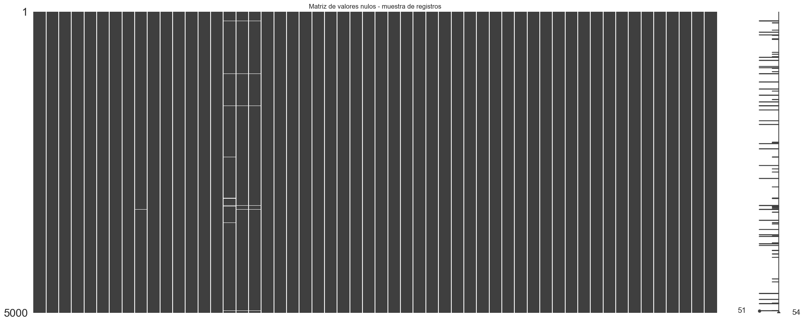
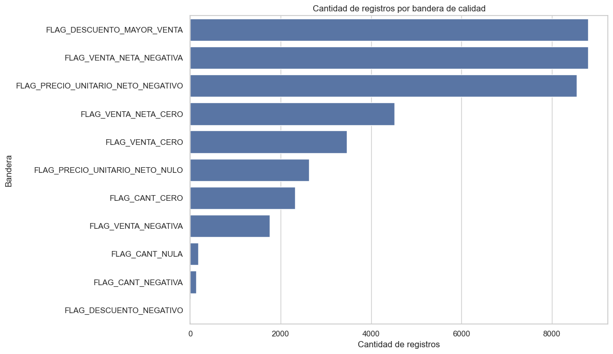

02 - Limpieza y calidad de datos#
Este notebook tiene como objetivo realizar la limpieza inicial de la base de ventas y construir las variables necesarias para el análisis exploratorio completo.
A diferencia del notebook anterior, aquí sí se transforma la base original para dejarla en un formato analítico.
Las tareas principales son:
Cargar la base original desde
data/raw.Convertir la fecha desde serial de Excel a fecha real.
Convertir columnas numéricas con formato decimal.
Normalizar variables categóricas.
Crear la variable
VENTA_NETA.Crear variables temporales para el análisis.
Crear variables de promoción y descuento.
Crear identificador único de ticket.
Marcar registros con posibles problemas de calidad.
Guardar una versión limpia en
data/processed.
En este punto no se eliminan registros de forma agresiva. Los casos especiales se conservan y se marcan con banderas para analizarlos posteriormente.
# ===============================
# Imports principales
# ===============================
from pathlib import Path
import sys
import os
import pandas as pd
import numpy as np
import matplotlib.pyplot as plt
import seaborn as sns
import missingno as msno
pd.set_option("display.max_columns", None)
pd.set_option("display.max_rows", 120)
pd.set_option("display.float_format", "{:,.2f}".format)
sns.set_theme(style="whitegrid", context="notebook")
print("Librerías cargadas correctamente.")
Librerías cargadas correctamente.
# ===============================
# Rutas del proyecto
# ===============================
PROJECT_ROOT = Path.cwd().parent
DATA_DIR = PROJECT_ROOT / "data"
RAW_DIR = DATA_DIR / "raw"
INTERIM_DIR = DATA_DIR / "interim"
PROCESSED_DIR = DATA_DIR / "processed"
REPORTS_DIR = PROJECT_ROOT / "reports"
FIGURES_DIR = REPORTS_DIR / "figures"
TABLES_DIR = REPORTS_DIR / "tables"
RAW_FILE = RAW_DIR / "Ventas_1.csv"
INTERIM_FILE = INTERIM_DIR / "ventas_limpieza_inicial.parquet"
PROCESSED_FILE = PROCESSED_DIR / "ventas_eda.parquet"
print("Raíz del proyecto:")
print(PROJECT_ROOT)
print("\nArchivo original:")
print(RAW_FILE)
print("\n¿Existe el archivo?")
print(RAW_FILE.exists())
Raíz del proyecto:
c:\Users\sergi\OneDrive\Desktop\Proyecto Olimpica
Archivo original:
c:\Users\sergi\OneDrive\Desktop\Proyecto Olimpica\data\raw\Ventas_1.csv
¿Existe el archivo?
True
# ===============================
# Carga de la base original
# ===============================
df_raw = pd.read_csv(
RAW_FILE,
encoding="utf-8-sig",
dtype={
"CATEG": str,
"PLU_SAP": str,
"FACTURA": str,
"PDV": str,
"OFERTA_ID": str,
"GRUCOM": str,
"Estrato": str
},
low_memory=False
)
print("Base original cargada correctamente.")
print(f"Filas: {df_raw.shape[0]:,}")
print(f"Columnas: {df_raw.shape[1]:,}")
df_raw.head()
Base original cargada correctamente.
Filas: 409,760
Columnas: 12
| NroReg | FECHA | PDV | Estrato | OFERTA_ID | FACTURA | CATEG | PLU_SAP | CANT | VENTA | DESCUENTO | GRUCOM | |
|---|---|---|---|---|---|---|---|---|---|---|---|---|
| 0 | 4 | 44927 | 980 | 4 | 0 | 1 | 04010 | 1280454 | 3 | 298 | 0,00 | 10 |
| 1 | 12 | 44927 | 1255 | 4 | 0 | 2 | 04010 | 1328730 | 1 | 115 | 0,00 | 10 |
| 2 | 24 | 44927 | 1255 | 4 | 0 | 3 | 04010 | 1036266 | 3 | 448 | 0,00 | 10 |
| 3 | 36 | 44927 | 1311 | 6 | 0 | 4 | 08061 | 1265857 | 1 | 82 | 0,00 | 11 |
| 4 | 37 | 44927 | 980 | 4 | 0 | 5 | 04010 | 1328946 | 4 | 519 | 0,00 | 10 |
# ===============================
# Copia de trabajo
# ===============================
df = df_raw.copy()
print("Copia de trabajo creada.")
print(df.shape)
Copia de trabajo creada.
(409760, 12)
# ===============================
# Resumen inicial de tipos y nulos
# ===============================
resumen_inicial = pd.DataFrame({
"columna": df.columns,
"tipo_original": df.dtypes.astype(str).values,
"nulos": df.isna().sum().values,
"nulos_pct": (df.isna().mean().values * 100).round(4),
"unicos": df.nunique(dropna=False).values
})
resumen_inicial
| columna | tipo_original | nulos | nulos_pct | unicos | |
|---|---|---|---|---|---|
| 0 | NroReg | int64 | 0 | 0.00 | 409760 |
| 1 | FECHA | int64 | 0 | 0.00 | 731 |
| 2 | PDV | str | 0 | 0.00 | 3 |
| 3 | Estrato | str | 0 | 0.00 | 2 |
| 4 | OFERTA_ID | str | 0 | 0.00 | 3123 |
| 5 | FACTURA | str | 0 | 0.00 | 233889 |
| 6 | CATEG | str | 0 | 0.00 | 7 |
| 7 | PLU_SAP | str | 0 | 0.00 | 6039 |
| 8 | CANT | str | 180 | 0.04 | 242 |
| 9 | VENTA | int64 | 0 | 0.00 | 4083 |
| 10 | DESCUENTO | str | 0 | 0.00 | 1478 |
| 11 | GRUCOM | str | 0 | 0.00 | 2 |
Resumen inicial antes de la limpieza#
Antes de realizar transformaciones, la base presenta 12 columnas originales con una estructura consistente. La mayoría de las variables fueron cargadas como texto (str), especialmente aquellas que representan códigos o identificadores, como PDV, Estrato, OFERTA_ID, FACTURA, CATEG, PLU_SAP y GRUCOM.
La columna NroReg tiene 409.760 valores únicos y no presenta nulos, por lo que funciona como identificador único de cada línea de venta. La variable FECHA tiene 731 valores únicos, pero se encuentra como entero (int64), confirmando que aún debe convertirse desde serial de Excel a fecha real.
La única variable con valores faltantes es CANT, con 180 nulos, equivalentes al 0,04% de la base. Aunque el porcentaje es bajo, esta columna es importante porque representa la cantidad vendida y será necesaria para calcular unidades, precios unitarios y otros indicadores.
También se observa que CANT y DESCUENTO están almacenadas como texto. Esto ocurre porque contienen valores con coma decimal, por lo que deben limpiarse y convertirse a formato numérico antes de realizar cálculos.
En general, esta revisión confirma que la base tiene buena completitud inicial, pero requiere una limpieza de tipos de datos: convertir fecha, cantidad y descuento, y mantener los códigos categóricos como texto para no perder información.
# ===============================
# Funciones auxiliares
# ===============================
def limpiar_texto_codigo(serie, zfill=None):
"""
Limpia columnas de códigos que deben tratarse como texto.
Elimina espacios, comillas y terminaciones tipo .0.
Opcionalmente rellena con ceros a la izquierda.
"""
s = (
serie.astype("string")
.str.strip()
.str.replace('"', "", regex=False)
.str.replace("'", "", regex=False)
)
s = s.str.replace(r"\.0$", "", regex=True)
if zfill is not None:
s = s.mask(s.isna(), pd.NA)
s = s.apply(lambda x: x.zfill(zfill) if pd.notna(x) else pd.NA)
return s
def convertir_numero(serie):
"""
Convierte una columna con posibles comas decimales a número.
Soporta formatos como:
- 10,5
- 10.5
- 1.234,56
"""
s = (
serie.astype("string")
.str.strip()
.str.replace('"', "", regex=False)
.str.replace("'", "", regex=False)
)
# Si tiene punto y coma, asumimos formato latino: 1.234,56
mask_punto_coma = s.str.contains(r"\.", na=False) & s.str.contains(",", na=False)
s = s.mask(mask_punto_coma, s[mask_punto_coma].str.replace(".", "", regex=False))
# Reemplazar coma decimal por punto
s = s.str.replace(",", ".", regex=False)
return pd.to_numeric(s, errors="coerce")
def porcentaje(parte, total):
"""
Calcula porcentaje evitando división entre cero.
"""
if total == 0:
return np.nan
return parte / total * 100
# ===============================
# Limpieza de variables categóricas
# ===============================
df["PDV"] = limpiar_texto_codigo(df["PDV"])
df["Estrato"] = limpiar_texto_codigo(df["Estrato"])
df["OFERTA_ID"] = limpiar_texto_codigo(df["OFERTA_ID"])
df["FACTURA"] = limpiar_texto_codigo(df["FACTURA"])
df["CATEG"] = limpiar_texto_codigo(df["CATEG"], zfill=5)
df["PLU_SAP"] = limpiar_texto_codigo(df["PLU_SAP"])
df["GRUCOM"] = limpiar_texto_codigo(df["GRUCOM"])
print("Variables categóricas limpiadas.")
df[["PDV", "Estrato", "OFERTA_ID", "FACTURA", "CATEG", "PLU_SAP", "GRUCOM"]].head()
Variables categóricas limpiadas.
| PDV | Estrato | OFERTA_ID | FACTURA | CATEG | PLU_SAP | GRUCOM | |
|---|---|---|---|---|---|---|---|
| 0 | 980 | 4 | 0 | 1 | 04010 | 1280454 | 10 |
| 1 | 1255 | 4 | 0 | 2 | 04010 | 1328730 | 10 |
| 2 | 1255 | 4 | 0 | 3 | 04010 | 1036266 | 10 |
| 3 | 1311 | 6 | 0 | 4 | 08061 | 1265857 | 11 |
| 4 | 980 | 4 | 0 | 5 | 04010 | 1328946 | 10 |
Limpieza de variables categóricas#
La salida confirma que las variables categóricas fueron limpiadas correctamente. Estas columnas corresponden principalmente a códigos o identificadores, por lo que deben mantenerse como texto y no como valores numéricos de cálculo.
Se observa que variables como PDV, Estrato, OFERTA_ID, FACTURA, CATEG, PLU_SAP y GRUCOM conservaron una estructura limpia, sin espacios adicionales ni formatos inconsistentes visibles.
Un punto importante es que la columna CATEG conserva los ceros iniciales, como en los códigos 04010 y 08061. Esto es fundamental, porque si esta variable se tratara como número, esos ceros se perderían y podría alterarse la identificación correcta de las categorías.
También se mantiene PLU_SAP como identificador del producto y FACTURA como identificador de factura. Estas variables no deben transformarse a valores numéricos para operaciones matemáticas, ya que su función principal es identificar registros, productos y transacciones.
# ===============================
# Conversión de fecha
# ===============================
df["FECHA_ORIGINAL"] = df["FECHA"]
df["FECHA"] = pd.to_datetime(
pd.to_numeric(df["FECHA"], errors="coerce"),
unit="D",
origin="1899-12-30",
errors="coerce"
)
print("Conversión de fecha finalizada.")
print("Fecha mínima:", df["FECHA"].min())
print("Fecha máxima:", df["FECHA"].max())
print("Fechas nulas:", df["FECHA"].isna().sum())
print("Días únicos:", df["FECHA"].nunique())
Conversión de fecha finalizada.
Fecha mínima: 2023-01-01 00:00:00
Fecha máxima: 2024-12-31 00:00:00
Fechas nulas: 0
Días únicos: 731
Conversión de la variable fecha#
La conversión de la columna FECHA se realizó correctamente. La variable pasó de estar en formato serial de Excel a un formato de fecha real, lo que permite utilizarla en análisis temporales.
El periodo de la base va desde el 1 de enero de 2023 hasta el 31 de diciembre de 2024, con un total de 731 días únicos. Además, no se generaron fechas nulas durante la conversión, lo cual indica que todos los valores originales de fecha fueron interpretados correctamente.
Este resultado es importante porque confirma que la base cuenta con dos años completos de información diaria. A partir de esta variable se podrán crear variables adicionales como año, mes, día, día de la semana, semana del año, trimestre, quincena, fin de semana y fin de mes.
# ===============================
# Conversión de variables numéricas
# ===============================
df["NroReg"] = pd.to_numeric(df["NroReg"], errors="coerce")
df["CANT"] = convertir_numero(df["CANT"])
df["VENTA"] = convertir_numero(df["VENTA"])
df["DESCUENTO"] = convertir_numero(df["DESCUENTO"])
df["OFERTA_ID_NUM"] = convertir_numero(df["OFERTA_ID"])
print("Conversión numérica finalizada.")
df[["NroReg", "CANT", "VENTA", "DESCUENTO", "OFERTA_ID", "OFERTA_ID_NUM"]].head()
Conversión numérica finalizada.
| NroReg | CANT | VENTA | DESCUENTO | OFERTA_ID | OFERTA_ID_NUM | |
|---|---|---|---|---|---|---|
| 0 | 4 | 3.00 | 298 | 0.00 | 0 | 0 |
| 1 | 12 | 1.00 | 115 | 0.00 | 0 | 0 |
| 2 | 24 | 3.00 | 448 | 0.00 | 0 | 0 |
| 3 | 36 | 1.00 | 82 | 0.00 | 0 | 0 |
| 4 | 37 | 4.00 | 519 | 0.00 | 0 | 0 |
Conversión de variables numéricas#
La conversión numérica se realizó correctamente para las variables necesarias del análisis. En la muestra se observa que CANT, VENTA, DESCUENTO y OFERTA_ID_NUM ya se encuentran en formato numérico, lo que permite realizar operaciones matemáticas y construir indicadores derivados.
La columna CANT ahora aparece con valores decimales, por ejemplo 3.00, 1.00 y 4.00. Esto es adecuado porque en la base existen cantidades con decimales, posiblemente asociadas a productos vendidos por peso o fracción.
La columna DESCUENTO, que originalmente venía como texto con coma decimal, fue transformada correctamente a número. En las primeras filas aparece como 0.00, lo que indica que estas líneas no tienen descuento aplicado.
También se creó OFERTA_ID_NUM, que corresponde a una versión numérica de OFERTA_ID. Esta variable será útil para identificar si una línea tiene una oferta asociada, por ejemplo cuando OFERTA_ID_NUM > 0.
En conclusión, las variables numéricas quedaron listas para calcular métricas clave como VENTA_NETA, porcentaje de descuento, precios unitarios y banderas de promoción.
# ===============================
# Variables principales de venta
# ===============================
# Asegurar que las columnas numéricas queden como float normal
df["CANT"] = pd.to_numeric(df["CANT"], errors="coerce").astype(float)
df["VENTA"] = pd.to_numeric(df["VENTA"], errors="coerce").astype(float)
df["DESCUENTO"] = pd.to_numeric(df["DESCUENTO"], errors="coerce").astype(float)
# Venta neta
df["VENTA_NETA"] = df["VENTA"] - df["DESCUENTO"]
# Porcentaje de descuento
df["DESCUENTO_PCT"] = np.nan
mask_venta_positiva = df["VENTA"].notna() & (df["VENTA"] > 0)
df.loc[mask_venta_positiva, "DESCUENTO_PCT"] = (
df.loc[mask_venta_positiva, "DESCUENTO"] /
df.loc[mask_venta_positiva, "VENTA"] * 100
)
# Precio unitario bruto
df["PRECIO_UNITARIO_BRUTO"] = np.nan
mask_cant_positiva = df["CANT"].notna() & (df["CANT"] > 0)
df.loc[mask_cant_positiva, "PRECIO_UNITARIO_BRUTO"] = (
df.loc[mask_cant_positiva, "VENTA"] /
df.loc[mask_cant_positiva, "CANT"]
)
# Precio unitario neto
df["PRECIO_UNITARIO_NETO"] = np.nan
df.loc[mask_cant_positiva, "PRECIO_UNITARIO_NETO"] = (
df.loc[mask_cant_positiva, "VENTA_NETA"] /
df.loc[mask_cant_positiva, "CANT"]
)
print("Variables de venta creadas correctamente.")
df[[
"CANT",
"VENTA",
"DESCUENTO",
"VENTA_NETA",
"DESCUENTO_PCT",
"PRECIO_UNITARIO_BRUTO",
"PRECIO_UNITARIO_NETO"
]].head()
Variables de venta creadas correctamente.
| CANT | VENTA | DESCUENTO | VENTA_NETA | DESCUENTO_PCT | PRECIO_UNITARIO_BRUTO | PRECIO_UNITARIO_NETO | |
|---|---|---|---|---|---|---|---|
| 0 | 3.00 | 298.00 | 0.00 | 298.00 | 0.00 | 99.33 | 99.33 |
| 1 | 1.00 | 115.00 | 0.00 | 115.00 | 0.00 | 115.00 | 115.00 |
| 2 | 3.00 | 448.00 | 0.00 | 448.00 | 0.00 | 149.33 | 149.33 |
| 3 | 1.00 | 82.00 | 0.00 | 82.00 | 0.00 | 82.00 | 82.00 |
| 4 | 4.00 | 519.00 | 0.00 | 519.00 | 0.00 | 129.75 | 129.75 |
Creación de variables principales de venta#
En esta salida se observa que las variables principales de venta fueron creadas correctamente a partir de las columnas originales CANT, VENTA y DESCUENTO.
La variable más importante es VENTA_NETA, calculada como:
VENTA_NETA = VENTA - DESCUENTO
En las primeras filas, el descuento es igual a cero, por lo que la venta neta coincide con la venta bruta. Esto se refleja en que VENTA y VENTA_NETA tienen el mismo valor en esos registros.
También se creó DESCUENTO_PCT, que representa el porcentaje de descuento aplicado sobre la venta bruta. En esta muestra todos los valores son 0.00, lo cual indica que estas primeras líneas no tienen descuento.
Además, se calcularon los precios unitarios bruto y neto. En los casos sin descuento, PRECIO_UNITARIO_BRUTO y PRECIO_UNITARIO_NETO son iguales, ya que no hay diferencia entre la venta bruta y la venta neta.
# ===============================
# Variables de promoción
# ===============================
df["PROMO_OFERTA_FLAG"] = df["OFERTA_ID_NUM"].fillna(0) > 0
df["PROMO_DESCUENTO_FLAG"] = df["DESCUENTO"].fillna(0) > 0
df["PROMO_FLAG"] = df["PROMO_OFERTA_FLAG"] | df["PROMO_DESCUENTO_FLAG"]
df["TIPO_PROMO"] = np.select(
[
df["PROMO_OFERTA_FLAG"] & df["PROMO_DESCUENTO_FLAG"],
df["PROMO_OFERTA_FLAG"] & ~df["PROMO_DESCUENTO_FLAG"],
~df["PROMO_OFERTA_FLAG"] & df["PROMO_DESCUENTO_FLAG"]
],
[
"Oferta y descuento",
"Solo oferta",
"Solo descuento"
],
default="Sin promoción"
)
print("Variables de promoción creadas.")
df[["OFERTA_ID", "OFERTA_ID_NUM", "DESCUENTO", "PROMO_FLAG", "TIPO_PROMO"]].head()
Variables de promoción creadas.
| OFERTA_ID | OFERTA_ID_NUM | DESCUENTO | PROMO_FLAG | TIPO_PROMO | |
|---|---|---|---|---|---|
| 0 | 0 | 0 | 0.00 | False | Sin promoción |
| 1 | 0 | 0 | 0.00 | False | Sin promoción |
| 2 | 0 | 0 | 0.00 | False | Sin promoción |
| 3 | 0 | 0 | 0.00 | False | Sin promoción |
| 4 | 0 | 0 | 0.00 | False | Sin promoción |
Creación de variables de promoción#
La salida confirma que las variables de promoción fueron creadas correctamente a partir de OFERTA_ID y DESCUENTO.
Se creó OFERTA_ID_NUM, que corresponde a la versión numérica del identificador de oferta. Esta variable permite evaluar si una línea está asociada a una promoción cuando su valor es mayor que cero.
También se creó PROMO_FLAG, que indica si una línea tiene algún tipo de promoción o descuento. En las primeras filas el valor es False, debido a que OFERTA_ID_NUM es igual a cero y DESCUENTO también es igual a cero.
La variable TIPO_PROMO clasifica cada línea según su condición promocional. En esta muestra, todos los registros aparecen como Sin promoción, lo cual significa que no tienen oferta identificada ni descuento aplicado.
Estas variables serán importantes para analizar qué proporción de las ventas ocurre con promoción, qué productos o categorías dependen más de descuentos y cómo se relacionan las promociones con la venta neta.
# ===============================
# Variables temporales
# ===============================
df["ANIO"] = df["FECHA"].dt.year
df["MES"] = df["FECHA"].dt.month
df["DIA"] = df["FECHA"].dt.day
df["DIA_SEMANA_NUM"] = df["FECHA"].dt.dayofweek
df["DIA_SEMANA"] = df["FECHA"].dt.day_name()
df["SEMANA_ANIO"] = df["FECHA"].dt.isocalendar().week.astype("Int64")
df["TRIMESTRE"] = df["FECHA"].dt.quarter
df["FIN_SEMANA"] = df["DIA_SEMANA_NUM"].isin([5, 6])
df["FIN_MES"] = df["FECHA"].dt.is_month_end
df["INICIO_MES"] = df["FECHA"].dt.is_month_start
df["QUINCENA"] = np.where(df["DIA"] <= 15, 1, 2)
# Nombre de mes en español para gráficos
mapa_meses = {
1: "Enero",
2: "Febrero",
3: "Marzo",
4: "Abril",
5: "Mayo",
6: "Junio",
7: "Julio",
8: "Agosto",
9: "Septiembre",
10: "Octubre",
11: "Noviembre",
12: "Diciembre"
}
mapa_dias = {
0: "Lunes",
1: "Martes",
2: "Miércoles",
3: "Jueves",
4: "Viernes",
5: "Sábado",
6: "Domingo"
}
df["MES_NOMBRE"] = df["MES"].map(mapa_meses)
df["DIA_SEMANA_NOMBRE"] = df["DIA_SEMANA_NUM"].map(mapa_dias)
print("Variables temporales creadas.")
df[[
"FECHA",
"ANIO",
"MES",
"MES_NOMBRE",
"DIA",
"DIA_SEMANA_NUM",
"DIA_SEMANA_NOMBRE",
"SEMANA_ANIO",
"TRIMESTRE",
"FIN_SEMANA",
"FIN_MES",
"QUINCENA"
]].head()
Variables temporales creadas.
| FECHA | ANIO | MES | MES_NOMBRE | DIA | DIA_SEMANA_NUM | DIA_SEMANA_NOMBRE | SEMANA_ANIO | TRIMESTRE | FIN_SEMANA | FIN_MES | QUINCENA | |
|---|---|---|---|---|---|---|---|---|---|---|---|---|
| 0 | 2023-01-01 | 2023 | 1 | Enero | 1 | 6 | Domingo | 52 | 1 | True | False | 1 |
| 1 | 2023-01-01 | 2023 | 1 | Enero | 1 | 6 | Domingo | 52 | 1 | True | False | 1 |
| 2 | 2023-01-01 | 2023 | 1 | Enero | 1 | 6 | Domingo | 52 | 1 | True | False | 1 |
| 3 | 2023-01-01 | 2023 | 1 | Enero | 1 | 6 | Domingo | 52 | 1 | True | False | 1 |
| 4 | 2023-01-01 | 2023 | 1 | Enero | 1 | 6 | Domingo | 52 | 1 | True | False | 1 |
Creación de variables temporales#
Se crearon correctamente las variables temporales derivadas de la columna FECHA.
A partir de la fecha real se generaron campos como ANIO, MES, MES_NOMBRE, DIA, DIA_SEMANA_NUM, DIA_SEMANA_NOMBRE, SEMANA_ANIO, TRIMESTRE, FIN_SEMANA, FIN_MES y QUINCENA.
En las primeras filas se observa que la fecha corresponde al 1 de enero de 2023, identificado como domingo, perteneciente al mes de enero, al primer trimestre y a la primera quincena. Además, FIN_SEMANA aparece como True, porque la fecha cae en domingo, mientras que FIN_MES aparece como False, ya que no corresponde al último día del mes.
Estas variables son fundamentales para el análisis temporal, ya que permiten estudiar patrones por año, mes, día de la semana, fines de semana, quincenas y cierres de mes. También serán útiles en una futura etapa de modelado, porque las ventas suelen presentar comportamientos diferentes según el calendario.
# ===============================
# Identificador único de ticket
# ===============================
df["TICKET_ID"] = (
df["FECHA"].dt.strftime("%Y-%m-%d") + "_" +
df["PDV"].astype(str) + "_" +
df["FACTURA"].astype(str)
)
print(f"Facturas únicas globales: {df['FACTURA'].nunique():,}")
print(f"Tickets únicos FECHA + PDV + FACTURA: {df['TICKET_ID'].nunique():,}")
df[["FECHA", "PDV", "FACTURA", "TICKET_ID"]].head()
Facturas únicas globales: 233,889
Tickets únicos FECHA + PDV + FACTURA: 276,989
| FECHA | PDV | FACTURA | TICKET_ID | |
|---|---|---|---|---|
| 0 | 2023-01-01 | 980 | 1 | 2023-01-01_980_1 |
| 1 | 2023-01-01 | 1255 | 2 | 2023-01-01_1255_2 |
| 2 | 2023-01-01 | 1255 | 3 | 2023-01-01_1255_3 |
| 3 | 2023-01-01 | 1311 | 4 | 2023-01-01_1311_4 |
| 4 | 2023-01-01 | 980 | 5 | 2023-01-01_980_5 |
Creación del identificador único de ticket#
La salida muestra la construcción de la variable TICKET_ID, creada a partir de la combinación de FECHA, PDV y FACTURA.
Este paso es importante porque la columna FACTURA por sí sola contiene 233.889 valores únicos, mientras que al combinarla con fecha y punto de venta se obtienen 276.989 tickets únicos. Esto confirma que FACTURA no funciona como identificador único global, ya que puede repetirse en diferentes fechas o puntos de venta.
La nueva variable TICKET_ID permite identificar de forma más precisa cada compra o transacción. Por ejemplo, un ticket queda representado con una estructura como:
2023-01-01_980_1
Esto significa que la factura 1 ocurrió el 1 de enero de 2023 en el PDV 980.
En conclusión, TICKET_ID será la variable adecuada para analizar tickets, calcular ticket promedio, número de productos por compra, líneas por factura y comportamiento de compra por punto de venta.
# ===============================
# Banderas de calidad
# ===============================
df["FLAG_FECHA_NULA"] = df["FECHA"].isna()
df["FLAG_CANT_NULA"] = df["CANT"].isna()
df["FLAG_CANT_CERO"] = df["CANT"] == 0
df["FLAG_CANT_NEGATIVA"] = df["CANT"] < 0
df["FLAG_VENTA_NULA"] = df["VENTA"].isna()
df["FLAG_VENTA_CERO"] = df["VENTA"] == 0
df["FLAG_VENTA_NEGATIVA"] = df["VENTA"] < 0
df["FLAG_DESCUENTO_NULO"] = df["DESCUENTO"].isna()
df["FLAG_DESCUENTO_CERO"] = df["DESCUENTO"] == 0
df["FLAG_DESCUENTO_NEGATIVO"] = df["DESCUENTO"] < 0
df["FLAG_DESCUENTO_MAYOR_VENTA"] = df["DESCUENTO"] > df["VENTA"]
df["FLAG_VENTA_NETA_NULA"] = df["VENTA_NETA"].isna()
df["FLAG_VENTA_NETA_CERO"] = df["VENTA_NETA"] == 0
df["FLAG_VENTA_NETA_NEGATIVA"] = df["VENTA_NETA"] < 0
df["FLAG_PRECIO_UNITARIO_NETO_NULO"] = df["PRECIO_UNITARIO_NETO"].isna()
df["FLAG_PRECIO_UNITARIO_NETO_NEGATIVO"] = df["PRECIO_UNITARIO_NETO"] < 0
flags_calidad = [
"FLAG_FECHA_NULA",
"FLAG_CANT_NULA",
"FLAG_CANT_CERO",
"FLAG_CANT_NEGATIVA",
"FLAG_VENTA_NULA",
"FLAG_VENTA_CERO",
"FLAG_VENTA_NEGATIVA",
"FLAG_DESCUENTO_NULO",
"FLAG_DESCUENTO_NEGATIVO",
"FLAG_DESCUENTO_MAYOR_VENTA",
"FLAG_VENTA_NETA_NULA",
"FLAG_VENTA_NETA_CERO",
"FLAG_VENTA_NETA_NEGATIVA",
"FLAG_PRECIO_UNITARIO_NETO_NULO",
"FLAG_PRECIO_UNITARIO_NETO_NEGATIVO"
]
df["REGISTRO_ESPECIAL"] = df[flags_calidad].any(axis=1)
print("Banderas de calidad creadas.")
print(f"Registros especiales: {df['REGISTRO_ESPECIAL'].sum():,}")
print(f"Porcentaje registros especiales: {df['REGISTRO_ESPECIAL'].mean() * 100:.2f}%")
Banderas de calidad creadas.
Registros especiales: 13,497
Porcentaje registros especiales: 3.29%
Creación de banderas de calidad#
Se crearon las banderas de calidad para identificar registros que presentan condiciones especiales, como cantidades nulas, cantidades en cero, cantidades negativas, ventas negativas, ventas en cero, descuentos negativos, descuentos mayores que la venta o ventas netas negativas.
El resultado muestra que existen 13.497 registros especiales, equivalentes al 3,29% del total de la base. Esto significa que la gran mayoría de los registros no presenta problemas básicos de calidad, pero sí existe un subconjunto que requiere revisión.
Estos registros especiales no deben eliminarse automáticamente, ya que pueden representar devoluciones, ajustes, notas crédito, promociones agresivas, errores de registro o movimientos operativos válidos dentro del negocio.
En conclusión, las banderas de calidad permiten conservar estos casos dentro de la base, pero identificándolos claramente para analizarlos por separado en el EDA y decidir posteriormente cómo tratarlos en una etapa de modelado.
# ===============================
# Registro válido básico
# ===============================
df["REGISTRO_VALIDO_BASICO"] = (
df["FECHA"].notna() &
df["CANT"].notna() &
df["VENTA"].notna() &
df["DESCUENTO"].notna() &
(df["CANT"] > 0) &
(df["VENTA"] > 0) &
(df["DESCUENTO"] >= 0) &
(df["DESCUENTO"] <= df["VENTA"]) &
(df["VENTA_NETA"] >= 0)
)
print(f"Registros válidos básicos: {df['REGISTRO_VALIDO_BASICO'].sum():,}")
print(f"Porcentaje válidos básicos: {df['REGISTRO_VALIDO_BASICO'].mean() * 100:.2f}%")
print(f"\nRegistros no válidos básicos: {(~df['REGISTRO_VALIDO_BASICO']).sum():,}")
print(f"Porcentaje no válidos básicos: {(~df['REGISTRO_VALIDO_BASICO']).mean() * 100:.2f}%")
Registros válidos básicos: 398,537
Porcentaje válidos básicos: 97.26%
Registros no válidos básicos: 11,223
Porcentaje no válidos básicos: 2.74%
Identificación de registros válidos básicos#
Después de aplicar las reglas de validación básica, se identificaron 398.537 registros válidos, equivalentes al 97,26% de la base. Esto indica que la mayoría de las líneas cumplen condiciones mínimas de calidad, como tener fecha válida, cantidad positiva, venta positiva, descuento no negativo y venta neta no negativa.
Por otro lado, existen 11.223 registros no válidos básicos, que representan el 2,74% del total. Estos registros corresponden a casos que requieren revisión, como cantidades nulas o negativas, ventas en cero, ventas negativas, descuentos mayores que la venta o ventas netas negativas.
Este resultado es positivo porque confirma que la base tiene una calidad general alta. Sin embargo, el grupo de registros no válidos debe conservarse con banderas y analizarse por separado, ya que puede contener devoluciones, ajustes, anulaciones o registros operativos especiales.
En conclusión, para análisis descriptivos generales se puede trabajar con la base completa, pero para modelado predictivo conviene evaluar dos escenarios: uno con todos los registros usando banderas de calidad y otro solo con los registros válidos básicos.
# ===============================
# Resumen de banderas de calidad
# ===============================
resumen_flags = []
for flag in flags_calidad:
cantidad = df[flag].sum()
resumen_flags.append({
"bandera": flag,
"cantidad": cantidad,
"porcentaje": cantidad / len(df) * 100
})
resumen_flags = pd.DataFrame(resumen_flags).sort_values("cantidad", ascending=False)
resumen_flags["porcentaje"] = resumen_flags["porcentaje"].round(4)
resumen_flags
| bandera | cantidad | porcentaje | |
|---|---|---|---|
| 9 | FLAG_DESCUENTO_MAYOR_VENTA | 8799 | 2.15 |
| 12 | FLAG_VENTA_NETA_NEGATIVA | 8799 | 2.15 |
| 14 | FLAG_PRECIO_UNITARIO_NETO_NEGATIVO | 8553 | 2.09 |
| 11 | FLAG_VENTA_NETA_CERO | 4521 | 1.10 |
| 5 | FLAG_VENTA_CERO | 3470 | 0.85 |
| 13 | FLAG_PRECIO_UNITARIO_NETO_NULO | 2635 | 0.64 |
| 2 | FLAG_CANT_CERO | 2322 | 0.57 |
| 6 | FLAG_VENTA_NEGATIVA | 1763 | 0.43 |
| 1 | FLAG_CANT_NULA | 180 | 0.04 |
| 3 | FLAG_CANT_NEGATIVA | 133 | 0.03 |
| 8 | FLAG_DESCUENTO_NEGATIVO | 12 | 0.00 |
| 4 | FLAG_VENTA_NULA | 0 | 0.00 |
| 0 | FLAG_FECHA_NULA | 0 | 0.00 |
| 10 | FLAG_VENTA_NETA_NULA | 0 | 0.00 |
| 7 | FLAG_DESCUENTO_NULO | 0 | 0.00 |
Resumen de banderas de calidad#
El resumen de banderas permite identificar cuáles son los principales problemas o casos especiales presentes en la base después de la limpieza.
Las banderas más frecuentes son FLAG_DESCUENTO_MAYOR_VENTA y FLAG_VENTA_NETA_NEGATIVA, ambas con 8.799 registros, equivalentes al 2,15% de la base. Esto indica que todos los casos donde el descuento supera la venta generan venta neta negativa, por lo que estos registros deben analizarse como casos especiales.
También se identifican 8.553 registros con precio unitario neto negativo, equivalentes al 2,09%. Este resultado está relacionado con ventas netas negativas o cantidades que generan precios unitarios inconsistentes.
La bandera FLAG_VENTA_NETA_CERO aparece en 4.521 registros y FLAG_VENTA_CERO en 3.470 registros. Estos casos pueden corresponder a descuentos totales, promociones especiales, anulaciones o registros operativos sin valor de venta.
En cuanto a cantidad, se observan 2.322 registros con cantidad igual a cero, 180 registros con cantidad nula y 133 registros con cantidad negativa. Aunque estos porcentajes son bajos, deben marcarse porque afectan el cálculo de unidades y precios unitarios.
Las banderas de fecha nula, venta nula, descuento nulo y venta neta nula tienen valor cero, lo cual es positivo porque indica que las variables principales no presentan problemas de ausencia después de la limpieza.
En conclusión, la mayoría de los problemas de calidad no están relacionados con datos faltantes, sino con valores especiales como descuentos mayores que la venta, ventas netas negativas, ventas en cero y cantidades no positivas. Estos registros no deben eliminarse automáticamente, sino analizarse con banderas y tratamiento diferenciado.
# ===============================
# Nulos después de limpieza
# ===============================
resumen_nulos_limpio = (
df.isna()
.sum()
.reset_index()
.rename(columns={"index": "columna", 0: "nulos"})
)
resumen_nulos_limpio["nulos_pct"] = (
resumen_nulos_limpio["nulos"] / len(df) * 100
).round(4)
resumen_nulos_limpio = resumen_nulos_limpio.sort_values("nulos", ascending=False)
resumen_nulos_limpio.head(30)
| columna | nulos | nulos_pct | |
|---|---|---|---|
| 15 | DESCUENTO_PCT | 5233 | 1.28 |
| 16 | PRECIO_UNITARIO_BRUTO | 2635 | 0.64 |
| 17 | PRECIO_UNITARIO_NETO | 2635 | 0.64 |
| 8 | CANT | 180 | 0.04 |
| 0 | NroReg | 0 | 0.00 |
| 1 | FECHA | 0 | 0.00 |
| 5 | FACTURA | 0 | 0.00 |
| 4 | OFERTA_ID | 0 | 0.00 |
| 3 | Estrato | 0 | 0.00 |
| 2 | PDV | 0 | 0.00 |
| 10 | DESCUENTO | 0 | 0.00 |
| 6 | CATEG | 0 | 0.00 |
| 7 | PLU_SAP | 0 | 0.00 |
| 9 | VENTA | 0 | 0.00 |
| 13 | OFERTA_ID_NUM | 0 | 0.00 |
| 12 | FECHA_ORIGINAL | 0 | 0.00 |
| 11 | GRUCOM | 0 | 0.00 |
| 14 | VENTA_NETA | 0 | 0.00 |
| 18 | PROMO_OFERTA_FLAG | 0 | 0.00 |
| 19 | PROMO_DESCUENTO_FLAG | 0 | 0.00 |
| 20 | PROMO_FLAG | 0 | 0.00 |
| 21 | TIPO_PROMO | 0 | 0.00 |
| 22 | ANIO | 0 | 0.00 |
| 23 | MES | 0 | 0.00 |
| 24 | DIA | 0 | 0.00 |
| 25 | DIA_SEMANA_NUM | 0 | 0.00 |
| 26 | DIA_SEMANA | 0 | 0.00 |
| 27 | SEMANA_ANIO | 0 | 0.00 |
| 28 | TRIMESTRE | 0 | 0.00 |
| 29 | FIN_SEMANA | 0 | 0.00 |
Revisión de valores nulos después de la limpieza#
Después de la limpieza, la mayoría de las variables no presenta valores nulos. Las columnas originales principales, como FECHA, PDV, FACTURA, CATEG, PLU_SAP, VENTA, DESCUENTO, GRUCOM y VENTA_NETA, quedaron completas.
Los valores nulos aparecen principalmente en variables derivadas. La columna DESCUENTO_PCT tiene 5.233 valores nulos, equivalentes al 1,28% de la base. Esto ocurre porque el porcentaje de descuento no se calcula cuando la venta bruta es cero o no permite una división válida.
Las columnas PRECIO_UNITARIO_BRUTO y PRECIO_UNITARIO_NETO tienen 2.635 valores nulos, equivalentes al 0,64%. Estos nulos se generan cuando la cantidad es nula, cero o no permite calcular correctamente el precio unitario.
La columna original CANT mantiene 180 valores nulos, equivalentes al 0,04%, tal como se había identificado desde la revisión inicial.
En conclusión, los valores faltantes después de la limpieza no corresponden a errores nuevos en la base, sino a resultados esperados de cálculos donde no es válido dividir por cero o calcular indicadores con cantidades faltantes. Estos casos quedaron identificados y deben interpretarse como registros especiales, no como fallas críticas del proceso de limpieza.
# ===============================
# Visualización de valores nulos
# ===============================
plt.figure(figsize=(14, 6))
msno.matrix(df.sample(min(5000, len(df)), random_state=42))
plt.title("Matriz de valores nulos - muestra de registros")
plt.tight_layout()
output_fig = FIGURES_DIR / "calidad_datos" / "matriz_nulos_muestra.png"
plt.savefig(output_fig, dpi=300, bbox_inches="tight")
plt.show()
print(f"Figura guardada en: {output_fig}")
C:\Users\sergi\AppData\Local\Temp\ipykernel_40848\4132851631.py:8: UserWarning: This figure includes Axes that are not compatible with tight_layout, so results might be incorrect.
plt.tight_layout()
<Figure size 1400x600 with 0 Axes>

Figura guardada en: c:\Users\sergi\OneDrive\Desktop\Proyecto Olimpica\reports\figures\calidad_datos\matriz_nulos_muestra.png
Visualización de valores nulos#
La matriz de valores nulos permite observar visualmente la completitud de la base después del proceso de limpieza. En la muestra analizada, la mayoría de las columnas aparecen completamente llenas, lo cual confirma que la base tiene una estructura bastante completa.
Las líneas claras o espacios dentro de la matriz indican valores faltantes. Estos se concentran principalmente en variables específicas, especialmente en columnas derivadas como porcentajes o precios unitarios, donde los nulos aparecen cuando no es posible calcular el indicador por ventas o cantidades iguales a cero.
No se observa un patrón generalizado de ausencia de datos a través de toda la base. Es decir, los valores nulos no parecen afectar masivamente a múltiples columnas ni a bloques completos de registros.
En conclusión, la visualización confirma que la base tiene buena calidad en términos de completitud. Los valores faltantes existentes son puntuales y en su mayoría esperados por la lógica de cálculo de variables derivadas.
# ===============================
# Gráfico de banderas de calidad
# ===============================
resumen_flags_plot = resumen_flags[resumen_flags["cantidad"] > 0].copy()
plt.figure(figsize=(12, 7))
sns.barplot(
data=resumen_flags_plot,
y="bandera",
x="cantidad"
)
plt.title("Cantidad de registros por bandera de calidad")
plt.xlabel("Cantidad de registros")
plt.ylabel("Bandera")
plt.tight_layout()
output_fig = FIGURES_DIR / "calidad_datos" / "banderas_calidad.png"
plt.savefig(output_fig, dpi=300, bbox_inches="tight")
plt.show()
print(f"Figura guardada en: {output_fig}")

Figura guardada en: c:\Users\sergi\OneDrive\Desktop\Proyecto Olimpica\reports\figures\calidad_datos\banderas_calidad.png
Distribución de registros por bandera de calidad#
El gráfico muestra la cantidad de registros asociados a cada bandera de calidad. Las banderas con mayor frecuencia son FLAG_DESCUENTO_MAYOR_VENTA y FLAG_VENTA_NETA_NEGATIVA, ambas con valores cercanos a los 8.799 registros. Esto confirma que los casos donde el descuento supera la venta son los mismos que generan venta neta negativa.
También se observa una alta presencia de FLAG_PRECIO_UNITARIO_NETO_NEGATIVO, lo cual está relacionado con los registros donde la venta neta resulta negativa y, por tanto, el precio unitario neto calculado también puede tomar valores negativos.
Las siguientes banderas más frecuentes corresponden a FLAG_VENTA_NETA_CERO, FLAG_VENTA_CERO, FLAG_PRECIO_UNITARIO_NETO_NULO y FLAG_CANT_CERO. Estos casos pueden estar asociados a descuentos totales, ventas sin valor, cantidades iguales a cero o registros donde no es posible calcular correctamente el precio unitario.
En cambio, las banderas relacionadas con cantidad nula, cantidad negativa y descuento negativo tienen una frecuencia mucho menor. Esto indica que los principales casos especiales de la base no se deben tanto a datos faltantes, sino a condiciones comerciales o transaccionales particulares.
En conclusión, el gráfico permite identificar que la principal fuente de registros especiales está relacionada con descuentos superiores a la venta y ventas netas negativas. Estos registros deben analizarse de manera separada antes de tomar decisiones de eliminación o inclusión en futuros modelos.
# ===============================
# Estadísticos descriptivos
# ===============================
cols_numericas = [
"CANT",
"VENTA",
"DESCUENTO",
"VENTA_NETA",
"DESCUENTO_PCT",
"PRECIO_UNITARIO_BRUTO",
"PRECIO_UNITARIO_NETO"
]
estadisticos_limpios = df[cols_numericas].describe(
percentiles=[0.01, 0.05, 0.25, 0.50, 0.75, 0.95, 0.99]
).T
estadisticos_limpios
| count | mean | std | min | 1% | 5% | 25% | 50% | 75% | 95% | 99% | max | |
|---|---|---|---|---|---|---|---|---|---|---|---|---|
| CANT | 409,580.00 | 1.21 | 3.51 | -24.00 | 0.02 | 0.10 | 1.00 | 1.00 | 1.00 | 2.00 | 5.00 | 800.00 |
| VENTA | 409,760.00 | 340.35 | 807.68 | -32,896.00 | 0.00 | 21.00 | 83.00 | 178.00 | 398.00 | 1,116.00 | 2,289.00 | 195,457.00 |
| DESCUENTO | 409,760.00 | 39.71 | 269.24 | -862.00 | 0.00 | 0.00 | 0.00 | 0.00 | 8.00 | 228.00 | 574.00 | 80,080.00 |
| VENTA_NETA | 409,760.00 | 300.65 | 754.94 | -43,460.00 | -168.00 | 11.00 | 75.00 | 164.00 | 342.00 | 1,018.00 | 2,137.41 | 195,457.00 |
| DESCUENTO_PCT | 404,527.00 | 11.72 | 54.71 | 0.00 | 0.00 | 0.00 | 0.00 | 0.00 | 10.00 | 53.75 | 150.00 | 18,800.00 |
| PRECIO_UNITARIO_BRUTO | 407,125.00 | 339.60 | 1,110.82 | -18,810.00 | 3.00 | 30.00 | 101.00 | 193.00 | 439.00 | 1,110.00 | 1,771.00 | 376,900.00 |
| PRECIO_UNITARIO_NETO | 407,125.00 | 301.02 | 936.38 | -37,810.00 | -166.00 | 19.50 | 88.00 | 180.00 | 385.00 | 1,004.87 | 1,741.00 | 310,400.00 |
Estadísticos descriptivos después de la limpieza#
Los estadísticos descriptivos permiten entender el comportamiento de las variables numéricas ya convertidas y depuradas.
La variable CANT tiene una mediana de 1, lo que indica que la mayoría de líneas corresponden a ventas de una unidad. Sin embargo, existen cantidades decimales, cantidades negativas y valores extremos, con un máximo de 800. Esto confirma que la cantidad debe analizarse con cuidado, especialmente en productos vendidos por fracción, peso o en registros atípicos.
La variable VENTA presenta una mediana de 178 y un promedio de 340,35, lo que evidencia una distribución asimétrica hacia valores altos. La diferencia entre la media y la mediana muestra que existen ventas de alto valor que elevan el promedio. También se observan ventas negativas y un valor máximo de 195.457, por lo que es necesario revisar valores extremos.
En DESCUENTO, la mediana es 0, confirmando que al menos la mitad de las líneas no tienen descuento. No obstante, el percentil 75 ya muestra descuentos distintos de cero y el máximo llega a 80.080, lo que evidencia descuentos muy altos en algunos registros.
La variable VENTA_NETA tiene una mediana de 164 y un promedio de 300,65. También presenta valores negativos, con un mínimo de -43.460, lo que está relacionado con casos donde el descuento supera la venta o con posibles devoluciones y ajustes.
El DESCUENTO_PCT muestra que la mayoría de registros no tiene descuento, ya que hasta la mediana el valor es 0%. Sin embargo, en el percentil 99 alcanza 150% y el máximo llega a valores extremadamente altos, lo que confirma la existencia de descuentos superiores a la venta.
Los precios unitarios bruto y neto también presentan valores extremos y algunos valores negativos. Esto se explica por registros con cantidades negativas, ventas negativas, ventas netas negativas o cantidades muy pequeñas.
En conclusión, la mayoría de los registros se comporta dentro de rangos razonables, pero existen valores extremos y negativos que deben conservarse con banderas de calidad y analizarse por separado antes de cualquier decisión de eliminación o modelado.
# ===============================
# Resumen general limpio
# ===============================
resumen_general_limpio = pd.DataFrame({
"metrica": [
"Filas totales",
"Columnas totales",
"Fecha mínima",
"Fecha máxima",
"Días únicos",
"PDV únicos",
"Estratos únicos",
"Categorías únicas",
"Grupos comerciales únicos",
"Productos únicos",
"Facturas únicas globales",
"Tickets únicos",
"Venta bruta total",
"Descuento total",
"Venta neta total",
"Unidades totales",
"Líneas promocionales",
"Porcentaje líneas promocionales",
"Registros especiales",
"Porcentaje registros especiales",
"Registros válidos básicos",
"Porcentaje registros válidos básicos"
],
"valor": [
len(df),
df.shape[1],
df["FECHA"].min(),
df["FECHA"].max(),
df["FECHA"].nunique(),
df["PDV"].nunique(),
df["Estrato"].nunique(),
df["CATEG"].nunique(),
df["GRUCOM"].nunique(),
df["PLU_SAP"].nunique(),
df["FACTURA"].nunique(),
df["TICKET_ID"].nunique(),
df["VENTA"].sum(),
df["DESCUENTO"].sum(),
df["VENTA_NETA"].sum(),
df["CANT"].sum(),
df["PROMO_FLAG"].sum(),
df["PROMO_FLAG"].mean() * 100,
df["REGISTRO_ESPECIAL"].sum(),
df["REGISTRO_ESPECIAL"].mean() * 100,
df["REGISTRO_VALIDO_BASICO"].sum(),
df["REGISTRO_VALIDO_BASICO"].mean() * 100
]
})
resumen_general_limpio
| metrica | valor | |
|---|---|---|
| 0 | Filas totales | 409760 |
| 1 | Columnas totales | 54 |
| 2 | Fecha mínima | 2023-01-01 00:00:00 |
| 3 | Fecha máxima | 2024-12-31 00:00:00 |
| 4 | Días únicos | 731 |
| 5 | PDV únicos | 3 |
| 6 | Estratos únicos | 2 |
| 7 | Categorías únicas | 7 |
| 8 | Grupos comerciales únicos | 2 |
| 9 | Productos únicos | 6039 |
| 10 | Facturas únicas globales | 233889 |
| 11 | Tickets únicos | 276989 |
| 12 | Venta bruta total | 139,462,498.00 |
| 13 | Descuento total | 16,270,136.00 |
| 14 | Venta neta total | 123,192,362.00 |
| 15 | Unidades totales | 494,973.23 |
| 16 | Líneas promocionales | 109239 |
| 17 | Porcentaje líneas promocionales | 26.66 |
| 18 | Registros especiales | 13497 |
| 19 | Porcentaje registros especiales | 3.29 |
| 20 | Registros válidos básicos | 398537 |
| 21 | Porcentaje registros válidos básicos | 97.26 |
Resumen general de la base limpia#
Después del proceso de limpieza y creación de variables, la base queda conformada por 409.760 filas y 54 columnas. El aumento en el número de columnas se debe a la creación de variables derivadas de tiempo, venta, promoción, ticket y calidad de datos.
La cobertura temporal se mantiene completa, desde el 1 de enero de 2023 hasta el 31 de diciembre de 2024, con 731 días únicos. Esto confirma que la limpieza no alteró la continuidad temporal de la base.
La base contiene 3 puntos de venta, 2 estratos, 7 categorías, 2 grupos comerciales y 6.039 productos únicos. También se identifican 233.889 facturas únicas globales y 276.989 tickets únicos al usar el identificador compuesto FECHA + PDV + FACTURA.
En términos comerciales, la venta bruta total es de 139.462.498, el descuento total es de 16.270.136 y la venta neta total es de 123.192.362. Además, se registran 494.973,23 unidades vendidas.
Las líneas promocionales representan 109.239 registros, equivalentes al 26,66% de la base. Esto indica que las promociones y descuentos tienen una presencia importante y deben ser consideradas en los análisis posteriores.
En cuanto a calidad de datos, se identificaron 13.497 registros especiales, equivalentes al 3,29% del total. A su vez, 398.537 registros cumplen las reglas de validez básica, lo que representa el 97,26% de la base.
# ===============================
# Cobertura temporal
# ===============================
fecha_min = df["FECHA"].min()
fecha_max = df["FECHA"].max()
rango_fechas = pd.date_range(fecha_min, fecha_max, freq="D")
fechas_observadas = pd.Series(df["FECHA"].dropna().unique())
fechas_faltantes = sorted(set(rango_fechas) - set(fechas_observadas))
resumen_cobertura_temporal = pd.DataFrame({
"metrica": [
"Fecha mínima",
"Fecha máxima",
"Días esperados",
"Días observados",
"Días faltantes"
],
"valor": [
fecha_min,
fecha_max,
len(rango_fechas),
df["FECHA"].nunique(),
len(fechas_faltantes)
]
})
resumen_cobertura_temporal
| metrica | valor | |
|---|---|---|
| 0 | Fecha mínima | 2023-01-01 00:00:00 |
| 1 | Fecha máxima | 2024-12-31 00:00:00 |
| 2 | Días esperados | 731 |
| 3 | Días observados | 731 |
| 4 | Días faltantes | 0 |
Cobertura temporal después de la limpieza#
La validación temporal confirma que la base limpia conserva una cobertura completa desde el 1 de enero de 2023 hasta el 31 de diciembre de 2024.
Dentro de este periodo se esperaban 731 días y se observaron exactamente 731 días, por lo que no existen días faltantes en la serie.
Este resultado es importante porque garantiza que el proceso de limpieza no eliminó fechas ni generó huecos temporales. Además, permite trabajar con análisis diarios, semanales, mensuales y anuales sin necesidad de imputar fechas ausentes.
En conclusión, la base está temporalmente completa y es adecuada para análisis de tendencia, estacionalidad, comparación entre años y futura construcción de variables predictivas basadas en el tiempo.
# ===============================
# Fechas faltantes, si existen
# ===============================
if len(fechas_faltantes) > 0:
fechas_faltantes_df = pd.DataFrame({"fecha_faltante": fechas_faltantes})
display(fechas_faltantes_df.head(30))
else:
fechas_faltantes_df = pd.DataFrame(columns=["fecha_faltante"])
print("No se encontraron fechas faltantes en el periodo analizado.")
No se encontraron fechas faltantes en el periodo analizado.
# ===============================
# Calidad por PDV
# ===============================
calidad_pdv = (
df.groupby("PDV")
.agg(
filas=("NroReg", "count"),
registros_especiales=("REGISTRO_ESPECIAL", "sum"),
registros_validos_basicos=("REGISTRO_VALIDO_BASICO", "sum"),
cant_nula=("FLAG_CANT_NULA", "sum"),
cant_cero=("FLAG_CANT_CERO", "sum"),
cant_negativa=("FLAG_CANT_NEGATIVA", "sum"),
venta_cero=("FLAG_VENTA_CERO", "sum"),
venta_negativa=("FLAG_VENTA_NEGATIVA", "sum"),
descuento_mayor_venta=("FLAG_DESCUENTO_MAYOR_VENTA", "sum"),
venta_neta_negativa=("FLAG_VENTA_NETA_NEGATIVA", "sum")
)
.reset_index()
)
calidad_pdv["registros_especiales_pct"] = (
calidad_pdv["registros_especiales"] / calidad_pdv["filas"] * 100
).round(2)
calidad_pdv["registros_validos_basicos_pct"] = (
calidad_pdv["registros_validos_basicos"] / calidad_pdv["filas"] * 100
).round(2)
calidad_pdv
| PDV | filas | registros_especiales | registros_validos_basicos | cant_nula | cant_cero | cant_negativa | venta_cero | venta_negativa | descuento_mayor_venta | venta_neta_negativa | registros_especiales_pct | registros_validos_basicos_pct | |
|---|---|---|---|---|---|---|---|---|---|---|---|---|---|
| 0 | 1255 | 132627 | 4191 | 129092 | 82 | 767 | 63 | 1149 | 505 | 2688 | 2688 | 3.16 | 97.33 |
| 1 | 1311 | 201432 | 6028 | 196513 | 68 | 982 | 55 | 1353 | 622 | 3902 | 3902 | 2.99 | 97.56 |
| 2 | 980 | 75701 | 3278 | 72932 | 30 | 573 | 15 | 968 | 636 | 2209 | 2209 | 4.33 | 96.34 |
Calidad de datos por punto de venta#
La tabla muestra la distribución de registros especiales y registros válidos básicos por cada PDV.
El PDV 1311 tiene la mayor cantidad absoluta de registros especiales, con 6.028 casos, lo cual es esperable porque también es el punto de venta con mayor número de filas en la base. Sin embargo, en términos porcentuales, su proporción de registros especiales es de 2,99%, la más baja entre los tres PDV.
El PDV 1255 presenta 4.191 registros especiales, equivalentes al 3,16% de sus registros. Su porcentaje de registros válidos básicos es de 97,33%, lo que indica una calidad general alta.
El PDV 980 tiene 3.278 registros especiales, pero al tener menos filas totales, alcanza el mayor porcentaje relativo de registros especiales, con 4,33%. También presenta el menor porcentaje de registros válidos básicos, con 96,34%.
En los tres puntos de venta, los casos de descuento_mayor_venta coinciden con los casos de venta_neta_negativa, lo que confirma que las ventas netas negativas se explican principalmente por descuentos superiores al valor de la venta.
En conclusión, aunque todos los PDV presentan una calidad de datos aceptable, el PDV 980 requiere mayor atención relativa porque concentra el mayor porcentaje de registros especiales. Para análisis posteriores, conviene comparar resultados usando la base completa y una base filtrada por registros válidos básicos.
# ===============================
# Calidad por categoría
# ===============================
calidad_categoria = (
df.groupby(["GRUCOM", "CATEG"])
.agg(
filas=("NroReg", "count"),
registros_especiales=("REGISTRO_ESPECIAL", "sum"),
registros_validos_basicos=("REGISTRO_VALIDO_BASICO", "sum"),
cant_nula=("FLAG_CANT_NULA", "sum"),
cant_cero=("FLAG_CANT_CERO", "sum"),
cant_negativa=("FLAG_CANT_NEGATIVA", "sum"),
venta_cero=("FLAG_VENTA_CERO", "sum"),
venta_negativa=("FLAG_VENTA_NEGATIVA", "sum"),
descuento_mayor_venta=("FLAG_DESCUENTO_MAYOR_VENTA", "sum"),
venta_neta_negativa=("FLAG_VENTA_NETA_NEGATIVA", "sum")
)
.reset_index()
)
calidad_categoria["registros_especiales_pct"] = (
calidad_categoria["registros_especiales"] / calidad_categoria["filas"] * 100
).round(2)
calidad_categoria["registros_validos_basicos_pct"] = (
calidad_categoria["registros_validos_basicos"] / calidad_categoria["filas"] * 100
).round(2)
calidad_categoria.sort_values("registros_especiales", ascending=False)
| GRUCOM | CATEG | filas | registros_especiales | registros_validos_basicos | cant_nula | cant_cero | cant_negativa | venta_cero | venta_negativa | descuento_mayor_venta | venta_neta_negativa | registros_especiales_pct | registros_validos_basicos_pct | |
|---|---|---|---|---|---|---|---|---|---|---|---|---|---|---|
| 0 | 10 | 04010 | 158659 | 9111 | 151519 | 0 | 1213 | 11 | 2222 | 1254 | 5988 | 5988 | 5.74 | 95.50 |
| 2 | 11 | 08029 | 132505 | 2167 | 130491 | 73 | 622 | 38 | 693 | 271 | 1325 | 1325 | 1.64 | 98.48 |
| 3 | 11 | 08042 | 52788 | 902 | 52005 | 21 | 191 | 20 | 234 | 73 | 576 | 576 | 1.71 | 98.52 |
| 4 | 11 | 08061 | 53538 | 741 | 52806 | 25 | 195 | 20 | 210 | 69 | 515 | 515 | 1.38 | 98.63 |
| 5 | 11 | 08062 | 10997 | 528 | 10491 | 61 | 94 | 4 | 104 | 56 | 354 | 354 | 4.80 | 95.40 |
| 6 | 11 | 08067 | 876 | 47 | 829 | 0 | 6 | 40 | 6 | 40 | 41 | 41 | 5.37 | 94.63 |
| 1 | 10 | 04019 | 397 | 1 | 396 | 0 | 1 | 0 | 1 | 0 | 0 | 0 | 0.25 | 99.75 |
Calidad de datos por categoría#
La tabla muestra cómo se distribuyen los registros especiales y los registros válidos básicos entre las diferentes categorías de producto.
La categoría 04010 concentra la mayor cantidad absoluta de registros especiales, con 9.111 casos, equivalentes al 5,74% de sus registros. Esta categoría también tiene la mayor cantidad de filas de la base, por lo que su peso en los casos especiales es relevante. Además, presenta 5.988 registros con descuento mayor que la venta, los cuales coinciden con los casos de venta neta negativa.
La categoría 08062 también presenta una proporción alta de registros especiales, con 4,80%, aunque su volumen total de filas es mucho menor que el de 04010. Esto indica que, proporcionalmente, esta categoría requiere revisión.
La categoría 08067 tiene solo 876 filas, pero presenta 5,37% de registros especiales y el menor porcentaje de registros válidos básicos, con 94,63%. Al tener pocos registros, cualquier caso especial tiene mayor impacto porcentual, por lo que debe interpretarse con cautela.
Las categorías 08029, 08042 y 08061 presentan mejores niveles de calidad relativa, con porcentajes de registros válidos básicos superiores al 98%. Esto indica que sus datos son más estables en comparación con las categorías con mayor proporción de casos especiales.
La categoría 04019 muestra la mejor calidad relativa, con solo 1 registro especial y 99,75% de registros válidos básicos. Sin embargo, su volumen es muy bajo, por lo que no debe compararse directamente con categorías de alta frecuencia.
En conclusión, los problemas de calidad no se distribuyen de manera uniforme entre categorías. Las categorías 04010, 08062 y 08067 requieren especial atención en análisis posteriores, especialmente por la presencia de descuentos mayores que la venta, ventas netas negativas, ventas en cero y cantidades negativas.
# ===============================
# Muestra de registros especiales
# ===============================
cols_revision = [
"NroReg",
"FECHA",
"PDV",
"Estrato",
"OFERTA_ID",
"FACTURA",
"CATEG",
"PLU_SAP",
"CANT",
"VENTA",
"DESCUENTO",
"VENTA_NETA",
"DESCUENTO_PCT",
"PRECIO_UNITARIO_NETO",
"PROMO_FLAG",
"TIPO_PROMO",
"REGISTRO_ESPECIAL",
"REGISTRO_VALIDO_BASICO"
]
df[df["REGISTRO_ESPECIAL"]][cols_revision].head(30)
| NroReg | FECHA | PDV | Estrato | OFERTA_ID | FACTURA | CATEG | PLU_SAP | CANT | VENTA | DESCUENTO | VENTA_NETA | DESCUENTO_PCT | PRECIO_UNITARIO_NETO | PROMO_FLAG | TIPO_PROMO | REGISTRO_ESPECIAL | REGISTRO_VALIDO_BASICO | |
|---|---|---|---|---|---|---|---|---|---|---|---|---|---|---|---|---|---|---|
| 87 | 1782 | 2023-01-01 | 1255 | 4 | 163377 | 57 | 04010 | 1345338 | 1.00 | 71.00 | 71.00 | 0.00 | 100.00 | 0.00 | True | Oferta y descuento | True | True |
| 93 | 1903 | 2023-01-01 | 1255 | 4 | 163377 | 57 | 04010 | 1345337 | 1.00 | 71.00 | 71.00 | 0.00 | 100.00 | 0.00 | True | Oferta y descuento | True | True |
| 123 | 2448 | 2023-01-01 | 980 | 4 | 0 | 106 | 04010 | 1036245 | 0.00 | 0.00 | 0.00 | 0.00 | NaN | NaN | False | Sin promoción | True | False |
| 195 | 4362 | 2023-01-01 | 1255 | 4 | 0 | 152 | 08061 | 1008762 | 0.00 | 0.00 | 0.00 | 0.00 | NaN | NaN | False | Sin promoción | True | False |
| 366 | 8554 | 2023-01-02 | 1255 | 4 | 163446 | 288 | 08042 | 1341191 | 1.00 | 178.00 | 416.00 | -238.00 | 233.71 | -238.00 | True | Oferta y descuento | True | False |
| 401 | 9527 | 2023-01-02 | 980 | 4 | 0 | 313 | 04010 | 1342490 | 0.00 | 0.00 | 0.00 | 0.00 | NaN | NaN | False | Sin promoción | True | False |
| 524 | 13053 | 2023-01-02 | 1311 | 6 | 0 | 211 | 08029 | 1013410 | 0.00 | 0.00 | 0.00 | 0.00 | NaN | NaN | False | Sin promoción | True | False |
| 586 | 14729 | 2023-01-02 | 980 | 4 | 0 | 437 | 08029 | 1115190 | -1.00 | -438.00 | 0.00 | -438.00 | NaN | NaN | False | Sin promoción | True | False |
| 601 | 15053 | 2023-01-02 | 1255 | 4 | 163446 | 447 | 08042 | 1341191 | 1.00 | 178.00 | 416.00 | -238.00 | 233.71 | -238.00 | True | Oferta y descuento | True | False |
| 656 | 16410 | 2023-01-02 | 1255 | 4 | 0 | 366 | 08061 | 1011233 | 0.00 | 0.00 | 0.00 | 0.00 | NaN | NaN | False | Sin promoción | True | False |
| 697 | 17386 | 2023-01-02 | 980 | 4 | 0 | 239 | 08029 | 1297744 | 0.00 | 0.00 | 0.00 | 0.00 | NaN | NaN | False | Sin promoción | True | False |
| 732 | 18424 | 2023-01-03 | 1255 | 4 | 0 | 526 | 04010 | 1023733 | 0.00 | 0.00 | 0.00 | 0.00 | NaN | NaN | False | Sin promoción | True | False |
| 751 | 18912 | 2023-01-03 | 980 | 4 | 0 | 544 | 04010 | 1036245 | 0.00 | 0.00 | 0.00 | 0.00 | NaN | NaN | False | Sin promoción | True | False |
| 1331 | 35418 | 2023-01-04 | 1255 | 4 | 0 | 916 | 08029 | 1227143 | 0.00 | 0.00 | 0.00 | 0.00 | NaN | NaN | False | Sin promoción | True | False |
| 1412 | 37665 | 2023-01-04 | 1255 | 4 | 0 | 1039 | 08029 | 1227143 | 0.00 | 0.00 | 0.00 | 0.00 | NaN | NaN | False | Sin promoción | True | False |
| 1468 | 39625 | 2023-01-04 | 1255 | 4 | 0 | 870 | 04010 | 1036245 | 0.00 | 0.00 | 0.00 | 0.00 | NaN | NaN | False | Sin promoción | True | False |
| 1681 | 46056 | 2023-01-04 | 1255 | 4 | 0 | 1212 | 04010 | 1345557 | 0.00 | 0.00 | 0.00 | 0.00 | NaN | NaN | False | Sin promoción | True | False |
| 2041 | 53861 | 2023-01-05 | 980 | 4 | 0 | 1510 | 04010 | 1334627 | -1.00 | -228.00 | 0.00 | -228.00 | NaN | NaN | False | Sin promoción | True | False |
| 2181 | 57343 | 2023-01-06 | 980 | 4 | 163364 | 1596 | 04010 | 1153834 | 1.00 | 249.00 | 374.00 | -125.00 | 150.20 | -125.00 | True | Oferta y descuento | True | False |
| 2218 | 57837 | 2023-01-06 | 980 | 4 | 163484 | 1638 | 04010 | 1036252 | 1.00 | 0.00 | 120.00 | -120.00 | NaN | -120.00 | True | Oferta y descuento | True | False |
| 2220 | 57847 | 2023-01-06 | 980 | 4 | 163364 | 1640 | 04010 | 1129746 | 1.00 | 204.00 | 307.00 | -103.00 | 150.49 | -103.00 | True | Oferta y descuento | True | False |
| 2234 | 58044 | 2023-01-06 | 1311 | 6 | 163364 | 1654 | 04010 | 1249844 | 1.00 | 219.00 | 329.00 | -110.00 | 150.23 | -110.00 | True | Oferta y descuento | True | False |
| 2258 | 58631 | 2023-01-06 | 1255 | 4 | 163364 | 1676 | 04010 | 1023640 | 1.00 | 179.00 | 269.00 | -90.00 | 150.28 | -90.00 | True | Oferta y descuento | True | False |
| 2295 | 59480 | 2023-01-06 | 1255 | 4 | 163446 | 1599 | 08042 | 1341191 | 1.00 | 178.00 | 416.00 | -238.00 | 233.71 | -238.00 | True | Oferta y descuento | True | False |
| 2338 | 60357 | 2023-01-06 | 1255 | 4 | 163364 | 1589 | 04010 | 1267519 | 1.00 | 350.00 | 525.00 | -175.00 | 150.00 | -175.00 | True | Oferta y descuento | True | False |
| 2365 | 60839 | 2023-01-06 | 980 | 4 | 163364 | 1764 | 04010 | 1033944 | 1.00 | -638.00 | 957.00 | -1,595.00 | NaN | -1,595.00 | True | Oferta y descuento | True | False |
| 2383 | 61192 | 2023-01-06 | 1255 | 4 | 163364 | 1644 | 04010 | 1277760 | 1.00 | 31.00 | 46.00 | -15.00 | 148.39 | -15.00 | True | Oferta y descuento | True | False |
| 2396 | 61348 | 2023-01-06 | 1255 | 4 | 163364 | 1786 | 04010 | 1253817 | 1.00 | 129.00 | 193.00 | -64.00 | 149.61 | -64.00 | True | Oferta y descuento | True | False |
| 2455 | 62439 | 2023-01-06 | 1255 | 4 | 0 | 1832 | 08029 | 1235857 | 0.00 | 0.00 | 0.00 | 0.00 | NaN | NaN | False | Sin promoción | True | False |
| 2498 | 63101 | 2023-01-06 | 980 | 4 | 163364 | 1596 | 04010 | 1023682 | 1.00 | 284.00 | 426.00 | -142.00 | 150.00 | -142.00 | True | Oferta y descuento | True | False |
Muestra de registros especiales#
La muestra presenta algunos registros marcados como REGISTRO_ESPECIAL = True, es decir, líneas que cumplen alguna condición que requiere revisión dentro del análisis de calidad de datos.
Se observan varios tipos de casos especiales. Algunos registros tienen VENTA_NETA = 0 porque el descuento es igual a la venta, como ocurre cuando VENTA = 71 y DESCUENTO = 71. Estos casos aparecen como promoción u oferta y descuento, y aunque son registros especiales, pueden seguir siendo válidos desde el punto de vista básico si la cantidad y la venta son positivas.
También se identifican registros con CANT = 0, VENTA = 0 y DESCUENTO = 0. En estos casos no es posible calcular correctamente variables como DESCUENTO_PCT o PRECIO_UNITARIO_NETO, por eso aparecen valores NaN. Estos registros son considerados no válidos básicos porque no representan una venta efectiva con cantidad positiva.
Otro grupo importante corresponde a registros donde el DESCUENTO es mayor que la VENTA, generando VENTA_NETA negativa. Por ejemplo, hay casos con VENTA = 178 y DESCUENTO = 416, lo que produce una venta neta de -238. Estos registros están asociados principalmente a ofertas y descuentos, y deben revisarse como posibles devoluciones, ajustes, notas crédito, errores operativos o promociones especiales.
También aparecen ventas negativas, como registros con CANT = -1 y VENTA negativa. Estos casos no deben eliminarse automáticamente, pero sí deben analizarse por separado porque pueden representar devoluciones o movimientos contables.
En conclusión, esta muestra confirma que los registros especiales no corresponden a un único problema, sino a diferentes situaciones: descuentos totales, cantidades cero, ventas negativas, descuentos mayores que la venta y ventas netas negativas. Por eso es adecuado conservarlos con banderas de calidad y no eliminarlos directamente sin una validación de negocio.
# ===============================
# Ventas netas negativas
# ===============================
ventas_netas_negativas = df[df["VENTA_NETA"] < 0].copy()
print(f"Filas con venta neta negativa: {len(ventas_netas_negativas):,}")
print(f"Porcentaje: {len(ventas_netas_negativas) / len(df) * 100:.4f}%")
ventas_netas_negativas[cols_revision].head(30)
Filas con venta neta negativa: 8,799
Porcentaje: 2.1474%
| NroReg | FECHA | PDV | Estrato | OFERTA_ID | FACTURA | CATEG | PLU_SAP | CANT | VENTA | DESCUENTO | VENTA_NETA | DESCUENTO_PCT | PRECIO_UNITARIO_NETO | PROMO_FLAG | TIPO_PROMO | REGISTRO_ESPECIAL | REGISTRO_VALIDO_BASICO | |
|---|---|---|---|---|---|---|---|---|---|---|---|---|---|---|---|---|---|---|
| 366 | 8554 | 2023-01-02 | 1255 | 4 | 163446 | 288 | 08042 | 1341191 | 1.00 | 178.00 | 416.00 | -238.00 | 233.71 | -238.00 | True | Oferta y descuento | True | False |
| 586 | 14729 | 2023-01-02 | 980 | 4 | 0 | 437 | 08029 | 1115190 | -1.00 | -438.00 | 0.00 | -438.00 | NaN | NaN | False | Sin promoción | True | False |
| 601 | 15053 | 2023-01-02 | 1255 | 4 | 163446 | 447 | 08042 | 1341191 | 1.00 | 178.00 | 416.00 | -238.00 | 233.71 | -238.00 | True | Oferta y descuento | True | False |
| 2041 | 53861 | 2023-01-05 | 980 | 4 | 0 | 1510 | 04010 | 1334627 | -1.00 | -228.00 | 0.00 | -228.00 | NaN | NaN | False | Sin promoción | True | False |
| 2181 | 57343 | 2023-01-06 | 980 | 4 | 163364 | 1596 | 04010 | 1153834 | 1.00 | 249.00 | 374.00 | -125.00 | 150.20 | -125.00 | True | Oferta y descuento | True | False |
| 2218 | 57837 | 2023-01-06 | 980 | 4 | 163484 | 1638 | 04010 | 1036252 | 1.00 | 0.00 | 120.00 | -120.00 | NaN | -120.00 | True | Oferta y descuento | True | False |
| 2220 | 57847 | 2023-01-06 | 980 | 4 | 163364 | 1640 | 04010 | 1129746 | 1.00 | 204.00 | 307.00 | -103.00 | 150.49 | -103.00 | True | Oferta y descuento | True | False |
| 2234 | 58044 | 2023-01-06 | 1311 | 6 | 163364 | 1654 | 04010 | 1249844 | 1.00 | 219.00 | 329.00 | -110.00 | 150.23 | -110.00 | True | Oferta y descuento | True | False |
| 2258 | 58631 | 2023-01-06 | 1255 | 4 | 163364 | 1676 | 04010 | 1023640 | 1.00 | 179.00 | 269.00 | -90.00 | 150.28 | -90.00 | True | Oferta y descuento | True | False |
| 2295 | 59480 | 2023-01-06 | 1255 | 4 | 163446 | 1599 | 08042 | 1341191 | 1.00 | 178.00 | 416.00 | -238.00 | 233.71 | -238.00 | True | Oferta y descuento | True | False |
| 2338 | 60357 | 2023-01-06 | 1255 | 4 | 163364 | 1589 | 04010 | 1267519 | 1.00 | 350.00 | 525.00 | -175.00 | 150.00 | -175.00 | True | Oferta y descuento | True | False |
| 2365 | 60839 | 2023-01-06 | 980 | 4 | 163364 | 1764 | 04010 | 1033944 | 1.00 | -638.00 | 957.00 | -1,595.00 | NaN | -1,595.00 | True | Oferta y descuento | True | False |
| 2383 | 61192 | 2023-01-06 | 1255 | 4 | 163364 | 1644 | 04010 | 1277760 | 1.00 | 31.00 | 46.00 | -15.00 | 148.39 | -15.00 | True | Oferta y descuento | True | False |
| 2396 | 61348 | 2023-01-06 | 1255 | 4 | 163364 | 1786 | 04010 | 1253817 | 1.00 | 129.00 | 193.00 | -64.00 | 149.61 | -64.00 | True | Oferta y descuento | True | False |
| 2498 | 63101 | 2023-01-06 | 980 | 4 | 163364 | 1596 | 04010 | 1023682 | 1.00 | 284.00 | 426.00 | -142.00 | 150.00 | -142.00 | True | Oferta y descuento | True | False |
| 2503 | 63201 | 2023-01-06 | 1255 | 4 | 163358 | 1864 | 04010 | 1035973 | 1.00 | 66.00 | 100.00 | -34.00 | 151.52 | -34.00 | True | Oferta y descuento | True | False |
| 2524 | 63462 | 2023-01-06 | 1255 | 4 | 163364 | 1657 | 04010 | 1129749 | 1.00 | 204.00 | 307.00 | -103.00 | 150.49 | -103.00 | True | Oferta y descuento | True | False |
| 2686 | 66078 | 2023-01-06 | 1255 | 4 | 163364 | 1857 | 04010 | 1025791 | 1.00 | 95.00 | 143.00 | -48.00 | 150.53 | -48.00 | True | Oferta y descuento | True | False |
| 2713 | 66725 | 2023-01-06 | 1255 | 4 | 163446 | 1882 | 08042 | 1341191 | 1.00 | 178.00 | 416.00 | -238.00 | 233.71 | -238.00 | True | Oferta y descuento | True | False |
| 2749 | 67332 | 2023-01-06 | 1255 | 4 | 163364 | 1758 | 04010 | 1026091 | 1.00 | -314.00 | 598.00 | -912.00 | NaN | -912.00 | True | Oferta y descuento | True | False |
| 2780 | 67938 | 2023-01-06 | 1311 | 6 | 163484 | 2034 | 04010 | 1036252 | 1.00 | 0.00 | 164.00 | -164.00 | NaN | -164.00 | True | Oferta y descuento | True | False |
| 2781 | 67951 | 2023-01-06 | 1255 | 4 | 159648 | 1890 | 04010 | 1320431 | 1.00 | 157.00 | 368.00 | -211.00 | 234.39 | -211.00 | True | Oferta y descuento | True | False |
| 2938 | 70568 | 2023-01-07 | 1255 | 4 | 163740 | 2174 | 04010 | 1035404 | 1.00 | 181.00 | 272.00 | -91.00 | 150.28 | -91.00 | True | Oferta y descuento | True | False |
| 3092 | 73558 | 2023-01-07 | 1255 | 4 | 163739 | 2123 | 04010 | 1345337 | 1.00 | 35.00 | 106.00 | -71.00 | 302.86 | -71.00 | True | Oferta y descuento | True | False |
| 3112 | 74035 | 2023-01-07 | 1255 | 4 | 0 | 2308 | 04010 | 1129748 | 0.00 | -154.00 | 0.00 | -154.00 | NaN | NaN | False | Sin promoción | True | False |
| 3146 | 74740 | 2023-01-07 | 980 | 4 | 163484 | 2335 | 04010 | 1036253 | 1.00 | 0.00 | 120.00 | -120.00 | NaN | -120.00 | True | Oferta y descuento | True | False |
| 3204 | 75775 | 2023-01-07 | 980 | 4 | 163737 | 2368 | 04010 | 1313279 | 1.00 | -245.00 | 420.00 | -665.00 | NaN | -665.00 | True | Oferta y descuento | True | False |
| 3277 | 76767 | 2023-01-07 | 980 | 4 | 163737 | 2195 | 04010 | 1313279 | 1.00 | 35.00 | 140.00 | -105.00 | 400.00 | -105.00 | True | Oferta y descuento | True | False |
| 3366 | 78232 | 2023-01-07 | 1255 | 4 | 163737 | 2451 | 04010 | 1313280 | 1.00 | 86.00 | 129.00 | -43.00 | 150.00 | -43.00 | True | Oferta y descuento | True | False |
| 3383 | 78569 | 2023-01-07 | 1311 | 6 | 163469 | 2267 | 08029 | 1149608 | 1.00 | 30.00 | 45.00 | -15.00 | 150.00 | -15.00 | True | Oferta y descuento | True | False |
Revisión de ventas netas negativas#
El filtro identifica 8.799 filas con VENTA_NETA negativa, equivalentes al 2,1474% del total de registros. Aunque no representan la mayoría de la base, sí son un volumen importante que debe analizarse con cuidado.
En la muestra se observan dos situaciones principales. La primera corresponde a registros donde el DESCUENTO es mayor que la VENTA, por ejemplo ventas de 178 con descuentos de 416, lo que genera una venta neta de -238. Estos casos aparecen generalmente asociados a PROMO_FLAG = True y TIPO_PROMO = Oferta y descuento.
La segunda situación corresponde a registros con VENTA negativa o CANT negativa, como líneas con cantidad -1 y venta negativa. Estos casos pueden estar relacionados con devoluciones, anulaciones, ajustes operativos o notas crédito.
También se observan casos donde VENTA = 0 y DESCUENTO > 0, generando una venta neta negativa. En estos registros no se puede calcular correctamente el porcentaje de descuento, por eso DESCUENTO_PCT aparece como NaN.
En conclusión, las ventas netas negativas no deben eliminarse automáticamente. Deben mantenerse identificadas con banderas de calidad y analizarse por separado, ya que pueden representar movimientos reales del negocio, errores de registro o condiciones promocionales especiales. Para modelado predictivo, conviene evaluar dos escenarios: uno con la base completa incluyendo estas banderas y otro excluyendo estos casos especiales.
# ===============================
# Cantidades negativas
# ===============================
cantidades_negativas = df[df["CANT"] < 0].copy()
print(f"Filas con cantidad negativa: {len(cantidades_negativas):,}")
print(f"Porcentaje: {len(cantidades_negativas) / len(df) * 100:.4f}%")
cantidades_negativas[cols_revision].head(30)
Filas con cantidad negativa: 133
Porcentaje: 0.0325%
| NroReg | FECHA | PDV | Estrato | OFERTA_ID | FACTURA | CATEG | PLU_SAP | CANT | VENTA | DESCUENTO | VENTA_NETA | DESCUENTO_PCT | PRECIO_UNITARIO_NETO | PROMO_FLAG | TIPO_PROMO | REGISTRO_ESPECIAL | REGISTRO_VALIDO_BASICO | |
|---|---|---|---|---|---|---|---|---|---|---|---|---|---|---|---|---|---|---|
| 586 | 14729 | 2023-01-02 | 980 | 4 | 0 | 437 | 08029 | 1115190 | -1.00 | -438.00 | 0.00 | -438.00 | NaN | NaN | False | Sin promoción | True | False |
| 2041 | 53861 | 2023-01-05 | 980 | 4 | 0 | 1510 | 04010 | 1334627 | -1.00 | -228.00 | 0.00 | -228.00 | NaN | NaN | False | Sin promoción | True | False |
| 3785 | 85867 | 2023-01-08 | 1255 | 4 | 0 | 2771 | 08061 | 1013114 | -1.00 | -41.00 | 0.00 | -41.00 | NaN | NaN | False | Sin promoción | True | False |
| 4783 | 111453 | 2023-01-11 | 1311 | 6 | 163719 | 3478 | 08042 | 1194236 | -1.00 | -79.00 | -14.00 | -65.00 | NaN | NaN | True | Solo oferta | True | False |
| 4790 | 111740 | 2023-01-11 | 1311 | 6 | 163719 | 3478 | 08042 | 1189178 | -1.00 | -430.00 | -76.00 | -354.00 | NaN | NaN | True | Solo oferta | True | False |
| 4810 | 112288 | 2023-01-11 | 1311 | 6 | 163719 | 3478 | 08029 | 1013410 | -1.00 | -321.00 | -57.00 | -264.00 | NaN | NaN | True | Solo oferta | True | False |
| 4928 | 115521 | 2023-01-11 | 1311 | 6 | 163719 | 3599 | 08062 | 1350391 | -3.00 | -4,885.00 | -862.00 | -4,023.00 | NaN | NaN | True | Solo oferta | True | False |
| 5055 | 118721 | 2023-01-11 | 1311 | 6 | 163719 | 3478 | 08029 | 1227143 | -1.00 | -565.00 | -100.00 | -465.00 | NaN | NaN | True | Solo oferta | True | False |
| 5115 | 120373 | 2023-01-11 | 1311 | 6 | 163719 | 3478 | 08061 | 1008390 | -1.00 | -142.00 | -26.00 | -116.00 | NaN | NaN | True | Solo oferta | True | False |
| 5155 | 121415 | 2023-01-11 | 1311 | 6 | 163719 | 3478 | 08061 | 1292233 | -1.00 | -637.00 | -113.00 | -524.00 | NaN | NaN | True | Solo oferta | True | False |
| 5169 | 121828 | 2023-01-11 | 1311 | 6 | 163719 | 3599 | 08062 | 1016538 | -10.00 | -2,805.00 | -495.00 | -2,310.00 | NaN | NaN | True | Solo oferta | True | False |
| 5470 | 130038 | 2023-01-11 | 1311 | 6 | 163719 | 3478 | 08029 | 1160096 | -24.00 | -449.00 | -80.00 | -369.00 | NaN | NaN | True | Solo oferta | True | False |
| 7765 | 179541 | 2023-01-16 | 1255 | 4 | 164213 | 5551 | 08042 | 1015729 | -1.00 | -280.00 | -50.00 | -230.00 | NaN | NaN | True | Solo oferta | True | False |
| 8828 | 193590 | 2023-01-16 | 1311 | 6 | 0 | 6096 | 08061 | 1118560 | -5.00 | -635.00 | 0.00 | -635.00 | NaN | NaN | False | Sin promoción | True | False |
| 8879 | 194162 | 2023-01-16 | 1255 | 4 | 164213 | 5551 | 08061 | 1340398 | -1.00 | -61.00 | -11.00 | -50.00 | NaN | NaN | True | Solo oferta | True | False |
| 9645 | 221152 | 2023-01-18 | 1255 | 4 | 0 | 1295 | 08061 | 1019944 | -6.00 | -2,628.00 | 0.00 | -2,628.00 | NaN | NaN | False | Sin promoción | True | False |
| 10216 | 237322 | 2023-01-20 | 1311 | 6 | 0 | 7110 | 08061 | 1011233 | -1.00 | -178.00 | 0.00 | -178.00 | NaN | NaN | False | Sin promoción | True | False |
| 10626 | 242717 | 2023-01-20 | 980 | 4 | 0 | 7388 | 04010 | 1331978 | -1.00 | -21.00 | 0.00 | -21.00 | NaN | NaN | False | Sin promoción | True | False |
| 10881 | 246194 | 2023-01-20 | 1311 | 6 | 164512 | 7110 | 08061 | 1011233 | -1.00 | -125.00 | -54.00 | -71.00 | NaN | NaN | True | Solo oferta | True | False |
| 11263 | 251615 | 2023-01-21 | 980 | 4 | 0 | 7696 | 08042 | 1348386 | -1.00 | -316.00 | 0.00 | -316.00 | NaN | NaN | False | Sin promoción | True | False |
| 12478 | 282892 | 2023-01-23 | 1311 | 6 | 0 | 8546 | 08061 | 1013460 | -1.00 | -78.00 | 0.00 | -78.00 | NaN | NaN | False | Sin promoción | True | False |
| 12572 | 285613 | 2023-01-23 | 1255 | 4 | 0 | 8647 | 08029 | 1287870 | -1.00 | -69.00 | 0.00 | -69.00 | NaN | NaN | False | Sin promoción | True | False |
| 12964 | 295150 | 2023-01-24 | 1311 | 6 | 0 | 8974 | 08029 | 1011717 | -0.30 | -207.00 | 0.00 | -207.00 | NaN | NaN | False | Sin promoción | True | False |
| 13162 | 301004 | 2023-01-25 | 1255 | 4 | 0 | 9111 | 08029 | 1019258 | -1.00 | -87.00 | 0.00 | -87.00 | NaN | NaN | False | Sin promoción | True | False |
| 17075 | 383862 | 2023-01-31 | 1311 | 6 | 0 | 11939 | 08042 | 1010781 | -0.25 | -245.00 | 0.00 | -245.00 | NaN | NaN | False | Sin promoción | True | False |
| 27805 | 605273 | 2023-02-15 | 980 | 4 | 0 | 18902 | 08029 | 1009966 | -0.10 | -52.00 | 0.00 | -52.00 | NaN | NaN | False | Sin promoción | True | False |
| 29010 | 628303 | 2023-02-17 | 1255 | 4 | 0 | 1295 | 08067 | 75887 | -1.00 | -942.00 | 0.00 | -942.00 | NaN | NaN | False | Sin promoción | True | False |
| 29632 | 635954 | 2023-02-17 | 1255 | 4 | 0 | 1295 | 08062 | 1318611 | -1.00 | -821.00 | 0.00 | -821.00 | NaN | NaN | False | Sin promoción | True | False |
| 29942 | 640029 | 2023-02-17 | 1255 | 4 | 0 | 1295 | 08067 | 71551 | -1.00 | -729.00 | 0.00 | -729.00 | NaN | NaN | False | Sin promoción | True | False |
| 31878 | 679899 | 2023-02-21 | 1255 | 4 | 0 | 1295 | 08042 | 1011977 | -1.00 | -1,208.00 | 0.00 | -1,208.00 | NaN | NaN | False | Sin promoción | True | False |
Revisión de cantidades negativas#
Se identificaron 133 filas con cantidad negativa, equivalentes al 0,0325% del total de registros. Este porcentaje es muy bajo, por lo que no representa un problema masivo dentro de la base.
En la muestra se observa que las cantidades negativas suelen estar asociadas a ventas netas negativas y, en varios casos, también a ventas negativas. Esto puede indicar movimientos como devoluciones, anulaciones, ajustes de inventario, notas crédito o correcciones operativas.
También se observan casos con cantidades negativas decimales, como -0.30, -0.25 o -0.10, lo cual sugiere que algunos productos pueden venderse o devolverse por peso, fracción o unidad parcial.
Estos registros no deben eliminarse automáticamente, ya que pueden representar operaciones reales del negocio. Sin embargo, sí deben marcarse como casos especiales porque afectan directamente el cálculo de unidades vendidas, precios unitarios, venta neta y métricas agregadas.
En conclusión, las cantidades negativas son poco frecuentes, pero deben analizarse por separado. Para análisis comerciales generales pueden mantenerse con bandera de calidad, mientras que para modelado predictivo conviene evaluar si se excluyen o si se tratan como devoluciones/ajustes.
# ===============================
# Descuentos mayores que la venta
# ===============================
descuento_mayor_venta = df[df["DESCUENTO"] > df["VENTA"]].copy()
print(f"Filas con descuento mayor que venta: {len(descuento_mayor_venta):,}")
print(f"Porcentaje: {len(descuento_mayor_venta) / len(df) * 100:.4f}%")
descuento_mayor_venta[cols_revision].head(30)
Filas con descuento mayor que venta: 8,799
Porcentaje: 2.1474%
| NroReg | FECHA | PDV | Estrato | OFERTA_ID | FACTURA | CATEG | PLU_SAP | CANT | VENTA | DESCUENTO | VENTA_NETA | DESCUENTO_PCT | PRECIO_UNITARIO_NETO | PROMO_FLAG | TIPO_PROMO | REGISTRO_ESPECIAL | REGISTRO_VALIDO_BASICO | |
|---|---|---|---|---|---|---|---|---|---|---|---|---|---|---|---|---|---|---|
| 366 | 8554 | 2023-01-02 | 1255 | 4 | 163446 | 288 | 08042 | 1341191 | 1.00 | 178.00 | 416.00 | -238.00 | 233.71 | -238.00 | True | Oferta y descuento | True | False |
| 586 | 14729 | 2023-01-02 | 980 | 4 | 0 | 437 | 08029 | 1115190 | -1.00 | -438.00 | 0.00 | -438.00 | NaN | NaN | False | Sin promoción | True | False |
| 601 | 15053 | 2023-01-02 | 1255 | 4 | 163446 | 447 | 08042 | 1341191 | 1.00 | 178.00 | 416.00 | -238.00 | 233.71 | -238.00 | True | Oferta y descuento | True | False |
| 2041 | 53861 | 2023-01-05 | 980 | 4 | 0 | 1510 | 04010 | 1334627 | -1.00 | -228.00 | 0.00 | -228.00 | NaN | NaN | False | Sin promoción | True | False |
| 2181 | 57343 | 2023-01-06 | 980 | 4 | 163364 | 1596 | 04010 | 1153834 | 1.00 | 249.00 | 374.00 | -125.00 | 150.20 | -125.00 | True | Oferta y descuento | True | False |
| 2218 | 57837 | 2023-01-06 | 980 | 4 | 163484 | 1638 | 04010 | 1036252 | 1.00 | 0.00 | 120.00 | -120.00 | NaN | -120.00 | True | Oferta y descuento | True | False |
| 2220 | 57847 | 2023-01-06 | 980 | 4 | 163364 | 1640 | 04010 | 1129746 | 1.00 | 204.00 | 307.00 | -103.00 | 150.49 | -103.00 | True | Oferta y descuento | True | False |
| 2234 | 58044 | 2023-01-06 | 1311 | 6 | 163364 | 1654 | 04010 | 1249844 | 1.00 | 219.00 | 329.00 | -110.00 | 150.23 | -110.00 | True | Oferta y descuento | True | False |
| 2258 | 58631 | 2023-01-06 | 1255 | 4 | 163364 | 1676 | 04010 | 1023640 | 1.00 | 179.00 | 269.00 | -90.00 | 150.28 | -90.00 | True | Oferta y descuento | True | False |
| 2295 | 59480 | 2023-01-06 | 1255 | 4 | 163446 | 1599 | 08042 | 1341191 | 1.00 | 178.00 | 416.00 | -238.00 | 233.71 | -238.00 | True | Oferta y descuento | True | False |
| 2338 | 60357 | 2023-01-06 | 1255 | 4 | 163364 | 1589 | 04010 | 1267519 | 1.00 | 350.00 | 525.00 | -175.00 | 150.00 | -175.00 | True | Oferta y descuento | True | False |
| 2365 | 60839 | 2023-01-06 | 980 | 4 | 163364 | 1764 | 04010 | 1033944 | 1.00 | -638.00 | 957.00 | -1,595.00 | NaN | -1,595.00 | True | Oferta y descuento | True | False |
| 2383 | 61192 | 2023-01-06 | 1255 | 4 | 163364 | 1644 | 04010 | 1277760 | 1.00 | 31.00 | 46.00 | -15.00 | 148.39 | -15.00 | True | Oferta y descuento | True | False |
| 2396 | 61348 | 2023-01-06 | 1255 | 4 | 163364 | 1786 | 04010 | 1253817 | 1.00 | 129.00 | 193.00 | -64.00 | 149.61 | -64.00 | True | Oferta y descuento | True | False |
| 2498 | 63101 | 2023-01-06 | 980 | 4 | 163364 | 1596 | 04010 | 1023682 | 1.00 | 284.00 | 426.00 | -142.00 | 150.00 | -142.00 | True | Oferta y descuento | True | False |
| 2503 | 63201 | 2023-01-06 | 1255 | 4 | 163358 | 1864 | 04010 | 1035973 | 1.00 | 66.00 | 100.00 | -34.00 | 151.52 | -34.00 | True | Oferta y descuento | True | False |
| 2524 | 63462 | 2023-01-06 | 1255 | 4 | 163364 | 1657 | 04010 | 1129749 | 1.00 | 204.00 | 307.00 | -103.00 | 150.49 | -103.00 | True | Oferta y descuento | True | False |
| 2686 | 66078 | 2023-01-06 | 1255 | 4 | 163364 | 1857 | 04010 | 1025791 | 1.00 | 95.00 | 143.00 | -48.00 | 150.53 | -48.00 | True | Oferta y descuento | True | False |
| 2713 | 66725 | 2023-01-06 | 1255 | 4 | 163446 | 1882 | 08042 | 1341191 | 1.00 | 178.00 | 416.00 | -238.00 | 233.71 | -238.00 | True | Oferta y descuento | True | False |
| 2749 | 67332 | 2023-01-06 | 1255 | 4 | 163364 | 1758 | 04010 | 1026091 | 1.00 | -314.00 | 598.00 | -912.00 | NaN | -912.00 | True | Oferta y descuento | True | False |
| 2780 | 67938 | 2023-01-06 | 1311 | 6 | 163484 | 2034 | 04010 | 1036252 | 1.00 | 0.00 | 164.00 | -164.00 | NaN | -164.00 | True | Oferta y descuento | True | False |
| 2781 | 67951 | 2023-01-06 | 1255 | 4 | 159648 | 1890 | 04010 | 1320431 | 1.00 | 157.00 | 368.00 | -211.00 | 234.39 | -211.00 | True | Oferta y descuento | True | False |
| 2938 | 70568 | 2023-01-07 | 1255 | 4 | 163740 | 2174 | 04010 | 1035404 | 1.00 | 181.00 | 272.00 | -91.00 | 150.28 | -91.00 | True | Oferta y descuento | True | False |
| 3092 | 73558 | 2023-01-07 | 1255 | 4 | 163739 | 2123 | 04010 | 1345337 | 1.00 | 35.00 | 106.00 | -71.00 | 302.86 | -71.00 | True | Oferta y descuento | True | False |
| 3112 | 74035 | 2023-01-07 | 1255 | 4 | 0 | 2308 | 04010 | 1129748 | 0.00 | -154.00 | 0.00 | -154.00 | NaN | NaN | False | Sin promoción | True | False |
| 3146 | 74740 | 2023-01-07 | 980 | 4 | 163484 | 2335 | 04010 | 1036253 | 1.00 | 0.00 | 120.00 | -120.00 | NaN | -120.00 | True | Oferta y descuento | True | False |
| 3204 | 75775 | 2023-01-07 | 980 | 4 | 163737 | 2368 | 04010 | 1313279 | 1.00 | -245.00 | 420.00 | -665.00 | NaN | -665.00 | True | Oferta y descuento | True | False |
| 3277 | 76767 | 2023-01-07 | 980 | 4 | 163737 | 2195 | 04010 | 1313279 | 1.00 | 35.00 | 140.00 | -105.00 | 400.00 | -105.00 | True | Oferta y descuento | True | False |
| 3366 | 78232 | 2023-01-07 | 1255 | 4 | 163737 | 2451 | 04010 | 1313280 | 1.00 | 86.00 | 129.00 | -43.00 | 150.00 | -43.00 | True | Oferta y descuento | True | False |
| 3383 | 78569 | 2023-01-07 | 1311 | 6 | 163469 | 2267 | 08029 | 1149608 | 1.00 | 30.00 | 45.00 | -15.00 | 150.00 | -15.00 | True | Oferta y descuento | True | False |
Revisión de descuentos mayores que la venta#
Se identificaron 8.799 filas donde el DESCUENTO es mayor que la VENTA, equivalentes al 2,1474% del total de registros. Este resultado coincide con la cantidad de filas con VENTA_NETA negativa, lo que confirma que la principal causa de ventas netas negativas es que el descuento supera el valor bruto de la venta.
En la muestra se observan varios casos donde una venta positiva termina con venta neta negativa. Por ejemplo, registros con VENTA = 178 y DESCUENTO = 416 generan una VENTA_NETA = -238. También aparecen casos donde VENTA = 0 y existe un descuento positivo, lo que produce directamente una venta neta negativa.
La mayoría de estos registros están marcados con PROMO_FLAG = True y TIPO_PROMO = Oferta y descuento, lo que sugiere que muchos casos están relacionados con dinámicas promocionales, ajustes o condiciones comerciales especiales.
También se observan algunos registros con VENTA negativa y DESCUENTO positivo, lo cual puede representar devoluciones, anulaciones, notas crédito o ajustes operativos. En estos casos, el cálculo de DESCUENTO_PCT puede aparecer como NaN porque la venta bruta no permite una división válida.
En conclusión, los descuentos mayores que la venta son un caso especial relevante dentro de la base. No deben eliminarse automáticamente, pero sí deben mantenerse identificados con banderas de calidad y analizarse por separado, especialmente antes de construir modelos predictivos o calcular indicadores comerciales finales.
# ===============================
# Tipos finales
# ===============================
resumen_tipos_finales = pd.DataFrame({
"columna": df.columns,
"tipo_final": df.dtypes.astype(str).values,
"nulos": df.isna().sum().values,
"nulos_pct": (df.isna().mean().values * 100).round(4),
"unicos": df.nunique(dropna=False).values
})
resumen_tipos_finales
| columna | tipo_final | nulos | nulos_pct | unicos | |
|---|---|---|---|---|---|
| 0 | NroReg | int64 | 0 | 0.00 | 409760 |
| 1 | FECHA | datetime64[s] | 0 | 0.00 | 731 |
| 2 | PDV | string | 0 | 0.00 | 3 |
| 3 | Estrato | string | 0 | 0.00 | 2 |
| 4 | OFERTA_ID | string | 0 | 0.00 | 3123 |
| 5 | FACTURA | string | 0 | 0.00 | 233889 |
| 6 | CATEG | str | 0 | 0.00 | 7 |
| 7 | PLU_SAP | string | 0 | 0.00 | 6039 |
| 8 | CANT | float64 | 180 | 0.04 | 242 |
| 9 | VENTA | float64 | 0 | 0.00 | 4083 |
| 10 | DESCUENTO | float64 | 0 | 0.00 | 1478 |
| 11 | GRUCOM | string | 0 | 0.00 | 2 |
| 12 | FECHA_ORIGINAL | int64 | 0 | 0.00 | 731 |
| 13 | OFERTA_ID_NUM | Int64 | 0 | 0.00 | 3123 |
| 14 | VENTA_NETA | float64 | 0 | 0.00 | 4612 |
| 15 | DESCUENTO_PCT | float64 | 5233 | 1.28 | 6876 |
| 16 | PRECIO_UNITARIO_BRUTO | float64 | 2635 | 0.64 | 6574 |
| 17 | PRECIO_UNITARIO_NETO | float64 | 2635 | 0.64 | 7166 |
| 18 | PROMO_OFERTA_FLAG | boolean | 0 | 0.00 | 2 |
| 19 | PROMO_DESCUENTO_FLAG | bool | 0 | 0.00 | 2 |
| 20 | PROMO_FLAG | boolean | 0 | 0.00 | 2 |
| 21 | TIPO_PROMO | str | 0 | 0.00 | 4 |
| 22 | ANIO | int32 | 0 | 0.00 | 2 |
| 23 | MES | int32 | 0 | 0.00 | 12 |
| 24 | DIA | int32 | 0 | 0.00 | 31 |
| 25 | DIA_SEMANA_NUM | int32 | 0 | 0.00 | 7 |
| 26 | DIA_SEMANA | str | 0 | 0.00 | 7 |
| 27 | SEMANA_ANIO | Int64 | 0 | 0.00 | 52 |
| 28 | TRIMESTRE | int32 | 0 | 0.00 | 4 |
| 29 | FIN_SEMANA | bool | 0 | 0.00 | 2 |
| 30 | FIN_MES | bool | 0 | 0.00 | 2 |
| 31 | INICIO_MES | bool | 0 | 0.00 | 2 |
| 32 | QUINCENA | int64 | 0 | 0.00 | 2 |
| 33 | MES_NOMBRE | str | 0 | 0.00 | 12 |
| 34 | DIA_SEMANA_NOMBRE | str | 0 | 0.00 | 7 |
| 35 | TICKET_ID | str | 0 | 0.00 | 276989 |
| 36 | FLAG_FECHA_NULA | bool | 0 | 0.00 | 1 |
| 37 | FLAG_CANT_NULA | bool | 0 | 0.00 | 2 |
| 38 | FLAG_CANT_CERO | bool | 0 | 0.00 | 2 |
| 39 | FLAG_CANT_NEGATIVA | bool | 0 | 0.00 | 2 |
| 40 | FLAG_VENTA_NULA | bool | 0 | 0.00 | 1 |
| 41 | FLAG_VENTA_CERO | bool | 0 | 0.00 | 2 |
| 42 | FLAG_VENTA_NEGATIVA | bool | 0 | 0.00 | 2 |
| 43 | FLAG_DESCUENTO_NULO | bool | 0 | 0.00 | 1 |
| 44 | FLAG_DESCUENTO_CERO | bool | 0 | 0.00 | 2 |
| 45 | FLAG_DESCUENTO_NEGATIVO | bool | 0 | 0.00 | 2 |
| 46 | FLAG_DESCUENTO_MAYOR_VENTA | bool | 0 | 0.00 | 2 |
| 47 | FLAG_VENTA_NETA_NULA | bool | 0 | 0.00 | 1 |
| 48 | FLAG_VENTA_NETA_CERO | bool | 0 | 0.00 | 2 |
| 49 | FLAG_VENTA_NETA_NEGATIVA | bool | 0 | 0.00 | 2 |
| 50 | FLAG_PRECIO_UNITARIO_NETO_NULO | bool | 0 | 0.00 | 2 |
| 51 | FLAG_PRECIO_UNITARIO_NETO_NEGATIVO | bool | 0 | 0.00 | 2 |
| 52 | REGISTRO_ESPECIAL | bool | 0 | 0.00 | 2 |
| 53 | REGISTRO_VALIDO_BASICO | bool | 0 | 0.00 | 2 |
Diccionario técnico final de la base limpia#
La tabla muestra el estado final de las columnas después del proceso de limpieza, transformación y creación de variables adicionales. La base pasó de tener 12 columnas originales a 54 columnas finales, incorporando variables de fecha, venta, promoción, ticket y calidad de datos.
Se observa que la variable FECHA quedó correctamente convertida a tipo fecha (datetime64), con 731 valores únicos y sin valores nulos. Esto confirma que la conversión desde serial de Excel fue exitosa y que la base mantiene cobertura diaria completa.
Las variables de identificación y clasificación, como PDV, Estrato, OFERTA_ID, FACTURA, CATEG, PLU_SAP y GRUCOM, se conservaron como texto. Esto es adecuado porque son códigos o identificadores y no deben tratarse como variables numéricas de cálculo.
Las variables numéricas principales, como CANT, VENTA, DESCUENTO y VENTA_NETA, quedaron en formato numérico. CANT mantiene 180 valores nulos, equivalentes al 0,04%, que ya habían sido identificados desde la revisión inicial.
Los valores nulos restantes aparecen principalmente en variables derivadas: DESCUENTO_PCT, PRECIO_UNITARIO_BRUTO y PRECIO_UNITARIO_NETO. Estos nulos son esperados, ya que se generan cuando no es posible dividir por venta o cantidad, por ejemplo en ventas iguales a cero o cantidades iguales a cero.
También se observa la creación de variables promocionales como PROMO_OFERTA_FLAG, PROMO_DESCUENTO_FLAG, PROMO_FLAG y TIPO_PROMO, las cuales permiten clasificar las líneas según presencia de oferta, descuento o ambos.
Además, se incorporaron variables temporales como ANIO, MES, DIA, SEMANA_ANIO, TRIMESTRE, FIN_SEMANA, FIN_MES, INICIO_MES, QUINCENA, MES_NOMBRE y DIA_SEMANA_NOMBRE. Estas variables serán fundamentales para el análisis temporal y para futuros modelos predictivos.
La variable TICKET_ID tiene 276.989 valores únicos, lo que confirma que el identificador compuesto FECHA + PDV + FACTURA permite representar mejor las transacciones que la columna FACTURA por sí sola.
Finalmente, se crearon múltiples banderas de calidad, como FLAG_CANT_NEGATIVA, FLAG_VENTA_CERO, FLAG_DESCUENTO_MAYOR_VENTA, FLAG_VENTA_NETA_NEGATIVA, entre otras. Estas variables permiten identificar registros especiales sin eliminarlos automáticamente. También se crearon las variables resumen REGISTRO_ESPECIAL y REGISTRO_VALIDO_BASICO.
En conclusión, la base limpia quedó correctamente estructurada para el EDA. Las variables originales fueron preservadas, las columnas necesarias fueron convertidas al tipo adecuado y se añadieron variables derivadas que permiten analizar ventas, promociones, temporalidad, tickets y calidad de datos.
# ===============================
# Exportar tablas de calidad
# ===============================
output_excel = TABLES_DIR / "02_limpieza_y_calidad_datos.xlsx"
with pd.ExcelWriter(output_excel, engine="openpyxl") as writer:
resumen_inicial.to_excel(writer, sheet_name="resumen_inicial", index=False)
resumen_tipos_finales.to_excel(writer, sheet_name="tipos_finales", index=False)
resumen_nulos_limpio.to_excel(writer, sheet_name="nulos_limpio", index=False)
resumen_flags.to_excel(writer, sheet_name="banderas_calidad", index=False)
resumen_general_limpio.to_excel(writer, sheet_name="resumen_general", index=False)
resumen_cobertura_temporal.to_excel(writer, sheet_name="cobertura_temporal", index=False)
fechas_faltantes_df.to_excel(writer, sheet_name="fechas_faltantes", index=False)
estadisticos_limpios.to_excel(writer, sheet_name="estadisticos", index=True)
calidad_pdv.to_excel(writer, sheet_name="calidad_pdv", index=False)
calidad_categoria.to_excel(writer, sheet_name="calidad_categoria", index=False)
print(f"Archivo Excel exportado correctamente en: {output_excel}")
Archivo Excel exportado correctamente en: c:\Users\sergi\OneDrive\Desktop\Proyecto Olimpica\reports\tables\02_limpieza_y_calidad_datos.xlsx
# ===============================
# Guardar base limpia
# ===============================
df.to_parquet(INTERIM_FILE, index=False)
df.to_parquet(PROCESSED_FILE, index=False)
print("Base limpia guardada correctamente.")
print(f"Archivo interim: {INTERIM_FILE}")
print(f"Archivo processed: {PROCESSED_FILE}")
print(f"\nFilas guardadas: {df.shape[0]:,}")
print(f"Columnas guardadas: {df.shape[1]:,}")
Base limpia guardada correctamente.
Archivo interim: c:\Users\sergi\OneDrive\Desktop\Proyecto Olimpica\data\interim\ventas_limpieza_inicial.parquet
Archivo processed: c:\Users\sergi\OneDrive\Desktop\Proyecto Olimpica\data\processed\ventas_eda.parquet
Filas guardadas: 409,760
Columnas guardadas: 54
# ===============================
# Validación de archivo guardado
# ===============================
df_validacion = pd.read_parquet(PROCESSED_FILE)
print("Archivo procesado leído correctamente.")
print(f"Filas: {df_validacion.shape[0]:,}")
print(f"Columnas: {df_validacion.shape[1]:,}")
df_validacion.head()
Archivo procesado leído correctamente.
Filas: 409,760
Columnas: 54
| NroReg | FECHA | PDV | Estrato | OFERTA_ID | FACTURA | CATEG | PLU_SAP | CANT | VENTA | DESCUENTO | GRUCOM | FECHA_ORIGINAL | OFERTA_ID_NUM | VENTA_NETA | DESCUENTO_PCT | PRECIO_UNITARIO_BRUTO | PRECIO_UNITARIO_NETO | PROMO_OFERTA_FLAG | PROMO_DESCUENTO_FLAG | PROMO_FLAG | TIPO_PROMO | ANIO | MES | DIA | DIA_SEMANA_NUM | DIA_SEMANA | SEMANA_ANIO | TRIMESTRE | FIN_SEMANA | FIN_MES | INICIO_MES | QUINCENA | MES_NOMBRE | DIA_SEMANA_NOMBRE | TICKET_ID | FLAG_FECHA_NULA | FLAG_CANT_NULA | FLAG_CANT_CERO | FLAG_CANT_NEGATIVA | FLAG_VENTA_NULA | FLAG_VENTA_CERO | FLAG_VENTA_NEGATIVA | FLAG_DESCUENTO_NULO | FLAG_DESCUENTO_CERO | FLAG_DESCUENTO_NEGATIVO | FLAG_DESCUENTO_MAYOR_VENTA | FLAG_VENTA_NETA_NULA | FLAG_VENTA_NETA_CERO | FLAG_VENTA_NETA_NEGATIVA | FLAG_PRECIO_UNITARIO_NETO_NULO | FLAG_PRECIO_UNITARIO_NETO_NEGATIVO | REGISTRO_ESPECIAL | REGISTRO_VALIDO_BASICO | |
|---|---|---|---|---|---|---|---|---|---|---|---|---|---|---|---|---|---|---|---|---|---|---|---|---|---|---|---|---|---|---|---|---|---|---|---|---|---|---|---|---|---|---|---|---|---|---|---|---|---|---|---|---|---|---|
| 0 | 4 | 2023-01-01 | 980 | 4 | 0 | 1 | 04010 | 1280454 | 3.00 | 298.00 | 0.00 | 10 | 44927 | 0 | 298.00 | 0.00 | 99.33 | 99.33 | False | False | False | Sin promoción | 2023 | 1 | 1 | 6 | Sunday | 52 | 1 | True | False | True | 1 | Enero | Domingo | 2023-01-01_980_1 | False | False | False | False | False | False | False | False | True | False | False | False | False | False | False | False | False | True |
| 1 | 12 | 2023-01-01 | 1255 | 4 | 0 | 2 | 04010 | 1328730 | 1.00 | 115.00 | 0.00 | 10 | 44927 | 0 | 115.00 | 0.00 | 115.00 | 115.00 | False | False | False | Sin promoción | 2023 | 1 | 1 | 6 | Sunday | 52 | 1 | True | False | True | 1 | Enero | Domingo | 2023-01-01_1255_2 | False | False | False | False | False | False | False | False | True | False | False | False | False | False | False | False | False | True |
| 2 | 24 | 2023-01-01 | 1255 | 4 | 0 | 3 | 04010 | 1036266 | 3.00 | 448.00 | 0.00 | 10 | 44927 | 0 | 448.00 | 0.00 | 149.33 | 149.33 | False | False | False | Sin promoción | 2023 | 1 | 1 | 6 | Sunday | 52 | 1 | True | False | True | 1 | Enero | Domingo | 2023-01-01_1255_3 | False | False | False | False | False | False | False | False | True | False | False | False | False | False | False | False | False | True |
| 3 | 36 | 2023-01-01 | 1311 | 6 | 0 | 4 | 08061 | 1265857 | 1.00 | 82.00 | 0.00 | 11 | 44927 | 0 | 82.00 | 0.00 | 82.00 | 82.00 | False | False | False | Sin promoción | 2023 | 1 | 1 | 6 | Sunday | 52 | 1 | True | False | True | 1 | Enero | Domingo | 2023-01-01_1311_4 | False | False | False | False | False | False | False | False | True | False | False | False | False | False | False | False | False | True |
| 4 | 37 | 2023-01-01 | 980 | 4 | 0 | 5 | 04010 | 1328946 | 4.00 | 519.00 | 0.00 | 10 | 44927 | 0 | 519.00 | 0.00 | 129.75 | 129.75 | False | False | False | Sin promoción | 2023 | 1 | 1 | 6 | Sunday | 52 | 1 | True | False | True | 1 | Enero | Domingo | 2023-01-01_980_5 | False | False | False | False | False | False | False | False | True | False | False | False | False | False | False | False | False | True |
Conclusiones de limpieza y calidad de datos#
Después del proceso de limpieza inicial, la base quedó preparada para el EDA completo.
Las principales transformaciones realizadas fueron:
La variable
FECHAfue convertida desde serial de Excel a formato fecha real.Las variables
CANT,VENTAyDESCUENTOfueron convertidas a formato numérico para permitir cálculos y análisis estadísticos.Se creó la variable
VENTA_NETA, definida como:VENTA_NETA = VENTA - DESCUENTOSe crearon variables de precio unitario, porcentaje de descuento y promoción.
Se construyeron variables temporales como año, mes, día, semana del año, día de la semana, trimestre, fin de semana, fin de mes y quincena.
Se creó el identificador
TICKET_ID, combinando fecha, PDV y factura, debido a que la factura por sí sola no necesariamente identifica de forma única una compra.Se crearon banderas de calidad para detectar casos especiales como cantidades negativas, ventas negativas, descuentos mayores que la venta y ventas netas negativas.
No se eliminaron registros en esta etapa. Los registros especiales quedaron marcados para ser analizados con más detalle en notebooks posteriores.
La base limpia fue guardada en:
data/processed/ventas_eda.parquet